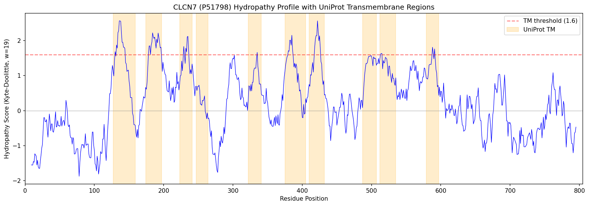
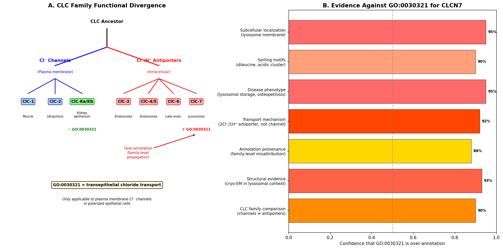

CLCN7 encodes ClC-7, a member of the CLC family that functions as an electrogenic 2Cl(-)/1H(+) antiporter (exchanger) rather than a passive chloride channel. It resides in the membranes of late endosomes and lysosomes, and in osteoclasts it localizes to the ruffled border bounding the resorption lacuna. ClC-7 forms an obligate heteromeric complex with the accessory beta-subunit OSTM1, which is required for ClC-7 protein stability and transport activity. By coupling chloride flux to the outwardly directed proton gradient, ClC-7 provides the counter-ion movement that allows the V-ATPase to acidify the lysosomal lumen and the osteoclast resorption space, and it raises luminal chloride concentration. Loss-of-function variants cause osteopetrosis (recessive OPTB4 and dominant Albers-Schonberg OPTA2) together with lysosomal storage and neurodegeneration, whereas certain gain-of-function variants cause a distinct hypopigmentation, organomegaly and delayed-myelination syndrome.
| GO Term | Evidence | Action | Reason |
|---|---|---|---|
|
GO:0005254
chloride channel activity
|
IBA
GO_REF:0000033 |
MODIFY |
Summary: ClC-7 is an electrogenic 2Cl(-)/1H(+) antiporter, not a passive chloride channel. The "chloride channel activity" term reflects historical CLC family naming but is mechanistically imprecise for ClC-7.
Reason: The verified molecular function of ClC-7 is coupled Cl(-)/H(+) exchange, directly demonstrated electrophysiologically with a measured 2Cl(-)/1H(+) stoichiometry. A more accurate term, chloride:proton antiporter activity (GO:0062158), is already present in GOA and should replace the generic channel term.
Proposed replacements:
chloride:proton antiporter activity
Supporting Evidence:
PMID:21527911
Reversal potentials of tail currents revealed a 2Cl(-)/1H(+)-exchange stoichiometry.
PMID:18449189
The Cl-/H+ antiporter ClC-7 is the primary chloride permeation pathway in lysosomes.
|
|
GO:0005765
lysosomal membrane
|
IBA
GO_REF:0000033 |
ACCEPT |
Summary: ClC-7 is active in the lysosomal membrane, where it performs Cl(-)/H(+) exchange. This localization is strongly supported by multiple experimental studies.
Reason: Lysosomal membrane is the core site of ClC-7 action and is corroborated by direct experimental localization and functional studies.
Supporting Evidence:
PMID:18449189
The Cl-/H+ antiporter ClC-7 is the primary chloride permeation pathway in lysosomes.
|
|
GO:0005770
late endosome
|
IBA
GO_REF:0000033 |
KEEP AS NON CORE |
Summary: ClC-7/OSTM1 resides in the late endosomal/lysosomal system, so late endosome localization is plausible but is a less central site than the lysosome.
Reason: Late endosomal localization is consistent with ClC-7 being an endolysosomal transporter, but the dominant and functionally characterized compartment is the lysosome; this phylogenetically inferred late-endosome term is retained as non-core.
Supporting Evidence:
PMID:32851177
CLC-7 functions as an electrogenic antiporter that mainly resides in lysosomes and osteoclast ruffled membranes.
|
|
GO:0030321
transepithelial chloride transport
|
IBA
GO_REF:0000033 |
REMOVE |
Summary: ClC-7 is an intracellular endolysosomal Cl(-)/H(+) antiporter, not a plasma-membrane transporter mediating transepithelial chloride movement.
Reason: Transepithelial chloride transport implies vectorial transport across an epithelial cell layer at the plasma membrane. ClC-7 acts on intracellular organelle membranes (lysosome, osteoclast ruffled border); this term is an over-annotation transferred phylogenetically and from a ComplexPortal complex annotation. An OpenScientist run traced the annotation to a ComplexPortal family-level introductory sentence (not specific to ClC-7) that was then propagated by PANTHER IBA to ~1,198 ortholog annotations, and confirmed via sorting-signal analysis that ClC-7 carries N-terminal dileucine and acidic-cluster lysosomal targeting motifs (absent from the plasma-membrane paralogs CLCNKA/CLCNKB) and never participates in transepithelial transport, so the term should be removed rather than merely flagged.
Supporting Evidence:
PMID:32851177
CLC-7 functions as an electrogenic antiporter that mainly resides in lysosomes and osteoclast ruffled membranes.
file:human/CLCN7/CLCN7-hypotheses/topology-transepithelial-overannotation/openscientist.md
a PANTHER IBA (Inferred by Biological Aspect of Ancestor) annotation that propagated this error to CLCN7 orthologs across approximately 1,198 annotations in many species.
file:human/CLCN7/CLCN7-hypotheses/topology-transepithelial-overannotation/openscientist.md
CLC-7 contains N-terminal dileucine and acidic cluster sorting motifs that actively target it to lysosomes
|
|
GO:0034707
chloride channel complex
|
IBA
GO_REF:0000033 |
ACCEPT |
Summary: ClC-7 is part of an obligate heteromeric complex with the beta-subunit OSTM1. This term captures that real CLCN7-OSTM1 complex (the "channel" label reflects family naming convention).
Reason: The CLCN7-OSTM1 complex is well established structurally and functionally (ComplexPortal CPX-6321), and OSTM1 is required for ClC-7 stability and activity. The term name uses "channel" by family convention, but the complex assignment is correct.
Supporting Evidence:
PMID:21527911
ClC-7 is a slowly voltage-gated 2Cl(-)/1H(+)-exchanger and requires Ostm1 for transport activity.
PMID:32851177
the highly glycosylated Ostm1 functions like a lid positioned above CLC-7 and interacts extensively with CLC-7 within the membrane.
|
|
GO:0062158
chloride:proton antiporter activity
|
IBA
GO_REF:0000033 |
ACCEPT |
Summary: This is the accurate core molecular function of ClC-7, matching the experimentally measured 2Cl(-)/1H(+) exchange.
Reason: Direct electrophysiology established a 2Cl(-)/1H(+)-exchange stoichiometry, and ClC-7 mediates the major lysosomal Cl(-)/H(+) antiport. This term precisely describes the verified activity.
Supporting Evidence:
PMID:21527911
Reversal potentials of tail currents revealed a 2Cl(-)/1H(+)-exchange stoichiometry.
PMID:18449189
The Cl-/H+ antiporter ClC-7 is the primary chloride permeation pathway in lysosomes.
|
|
GO:1902476
chloride transmembrane transport
|
IBA
GO_REF:0000033 |
ACCEPT |
Summary: ClC-7 mediates transmembrane chloride movement as part of its Cl(-)/H(+) exchange across the lysosomal membrane.
Reason: Chloride transmembrane transport is a correct biological-process description of ClC-7 antiporter activity and is well supported experimentally.
Supporting Evidence:
PMID:18449189
The Cl-/H+ antiporter ClC-7 is the primary chloride permeation pathway in lysosomes.
|
|
GO:0005254
chloride channel activity
|
IEA
GO_REF:0000117 |
MODIFY |
Summary: Same imprecise channel term as the IBA annotation, here from an ARBA machine-learning model. ClC-7 is an antiporter.
Reason: ClC-7 mediates coupled 2Cl(-)/1H(+) exchange rather than passive channel conduction; chloride:proton antiporter activity (GO:0062158) is the accurate replacement.
Proposed replacements:
chloride:proton antiporter activity
Supporting Evidence:
PMID:21527911
Reversal potentials of tail currents revealed a 2Cl(-)/1H(+)-exchange stoichiometry.
|
|
GO:0005765
lysosomal membrane
|
IEA
GO_REF:0000044 |
ACCEPT |
Summary: Lysosomal membrane localization, here from UniProt subcellular-location mapping; corroborated by experimental evidence.
Reason: Lysosomal membrane is the core localization of ClC-7 and is independently supported by experimental studies.
Supporting Evidence:
PMID:18449189
The Cl-/H+ antiporter ClC-7 is the primary chloride permeation pathway in lysosomes.
|
|
GO:0006821
chloride transport
|
IEA
GO_REF:0000002 |
KEEP AS NON CORE |
Summary: Generic chloride transport, an InterPro2GO transfer. Correct but less specific than chloride transmembrane transport / antiporter activity.
Reason: This term is a high-level parent consistent with ClC-7 function but is superseded by the more specific chloride transmembrane transport and chloride:proton antiporter terms already annotated.
Supporting Evidence:
PMID:18449189
The Cl-/H+ antiporter ClC-7 is the primary chloride permeation pathway in lysosomes.
|
|
GO:0015108
chloride transmembrane transporter activity
|
IEA
GO_REF:0000002 |
KEEP AS NON CORE |
Summary: Generic chloride transmembrane transporter activity from InterPro2GO. This is the correct parent of the antiporter activity but does not capture the coupled exchange mechanism.
Reason: Correct but generic; the specific chloride:proton antiporter activity (GO:0062158) is the informative molecular-function term. Retained as non-core.
Supporting Evidence:
PMID:21527911
Reversal potentials of tail currents revealed a 2Cl(-)/1H(+)-exchange stoichiometry.
|
|
GO:0016020
membrane
|
IEA
GO_REF:0000002 |
MARK AS OVER ANNOTATED |
Summary: Uninformative generic membrane localization from InterPro2GO.
Reason: "membrane" is an uninformatively broad cellular-component term; the specific lysosomal membrane localization is already captured by experimental annotations.
|
|
GO:0055085
transmembrane transport
|
IEA
GO_REF:0000002 |
KEEP AS NON CORE |
Summary: Generic transmembrane transport from InterPro2GO.
Reason: A high-level parent of the specific chloride transmembrane transport term; consistent with ClC-7 function but uninformative on its own. Retained as non-core.
|
|
GO:0062158
chloride:proton antiporter activity
|
IEA
GO_REF:0000002 |
ACCEPT |
Summary: Accurate antiporter molecular function, here from InterPro2GO; matches the experimentally verified activity.
Reason: This is the verified core molecular function and is independently supported by direct electrophysiological measurement of 2Cl(-)/1H(+) exchange.
Supporting Evidence:
PMID:21527911
Reversal potentials of tail currents revealed a 2Cl(-)/1H(+)-exchange stoichiometry.
|
|
GO:1902600
proton transmembrane transport
|
IEA
GO_REF:0000108 |
ACCEPT |
Summary: Proton transmembrane transport, inferred logically from the antiporter activity. ClC-7 does move protons as part of its coupled exchange.
Reason: Proton movement is an intrinsic half of the 2Cl(-)/1H(+) exchange and is directly supported by the measured stoichiometry and the role in lysosomal acidification.
Supporting Evidence:
PMID:21527911
Reversal potentials of tail currents revealed a 2Cl(-)/1H(+)-exchange stoichiometry.
|
|
GO:0005515
protein binding
|
IPI
PMID:32296183 A reference map of the human binary protein interactome. |
MARK AS OVER ANNOTATED |
Summary: Bare "protein binding" from a high-throughput binary interactome screen; uninformative about ClC-7 function.
Reason: GO:0005515 protein binding conveys no specific molecular function. The interactions reported in this large-scale screen are not the functionally defining OSTM1 partnership and do not warrant a specific term.
|
|
GO:0005515
protein binding
|
IPI
PMID:32814053 Interactome Mapping Provides a Network of Neurodegenerative ... |
MARK AS OVER ANNOTATED |
Summary: Bare "protein binding" from a neurodegenerative-disease interactome map; uninformative.
Reason: GO:0005515 protein binding is uninformative and does not capture a specific molecular function for ClC-7.
|
|
GO:0005515
protein binding
|
IPI
PMID:32851177 Molecular insights into the human CLC-7/Ostm1 transporter. |
MARK AS OVER ANNOTATED |
Summary: This IPI is to OSTM1 (Q86WC4), the functionally essential beta-subunit; however, as bare "protein binding" it is uninformative, and the OSTM1 partnership is better captured by the chloride channel complex term.
Reason: Although the underlying OSTM1 interaction is biologically central, the generic GO:0005515 term adds nothing beyond the CLCN7-OSTM1 complex annotation (GO:0034707). Use the complex term rather than bare protein binding.
Supporting Evidence:
PMID:32851177
the highly glycosylated Ostm1 functions like a lid positioned above CLC-7 and interacts extensively with CLC-7 within the membrane.
|
|
GO:0005515
protein binding
|
IPI
PMID:33961781 Dual proteome-scale networks reveal cell-specific remodeling... |
MARK AS OVER ANNOTATED |
Summary: Bare "protein binding" (interaction with OSTM1, Q86WC4) from a proteome-scale network study; uninformative as a generic term.
Reason: The generic GO:0005515 term is uninformative; the OSTM1 partnership it reflects is already captured by the chloride channel complex annotation.
|
|
GO:0005515
protein binding
|
IPI
PMID:35271311 OpenCell: Endogenous tagging for the cartography of human ce... |
MARK AS OVER ANNOTATED |
Summary: Bare "protein binding" from the OpenCell endogenous-tagging interactome; uninformative.
Reason: GO:0005515 protein binding conveys no specific molecular function for ClC-7.
|
|
GO:0005515
protein binding
|
IPI
PMID:40205054 Multimodal cell maps as a foundation for structural and func... |
MARK AS OVER ANNOTATED |
Summary: Bare "protein binding" (OSTM1, Q86WC4) from a multimodal cell-map study; uninformative as a generic term.
Reason: The generic GO:0005515 term adds nothing beyond the already-annotated CLCN7-OSTM1 complex term.
|
|
GO:0005515
protein binding
|
IPI
PMID:40355756 The solute carrier superfamily interactome. |
MARK AS OVER ANNOTATED |
Summary: Bare "protein binding" from a solute-carrier superfamily interactome; uninformative.
Reason: GO:0005515 protein binding conveys no specific molecular function and should not be retained as a core annotation.
|
|
GO:0009268
response to pH
|
IEA
GO_REF:0000107 |
KEEP AS NON CORE |
Summary: Response to pH, transferred electronically from a rat ortholog. There is no direct human experimental support, although ClC-7 does contribute to lysosomal pH regulation.
Reason: The term is plausible given ClC-7's role in luminal acidification, but it rests on automated ortholog transfer without direct human evidence and is peripheral to the core transporter function. Retained as non-core.
Supporting Evidence:
PMID:18449189
The Cl-/H+ antiporter ClC-7 is the primary chloride permeation pathway in lysosomes.
|
|
GO:0005765
lysosomal membrane
|
EXP
PMID:18449189 The Cl-/H+ antiporter ClC-7 is the primary chloride permeati... |
ACCEPT |
Summary: Direct experimental demonstration that ClC-7 localizes to and functions at the lysosomal membrane.
Reason: This is the strongest, experimentally grounded evidence for ClC-7's core lysosomal membrane localization.
Supporting Evidence:
PMID:18449189
The Cl-/H+ antiporter ClC-7 is the primary chloride permeation pathway in lysosomes.
|
|
GO:0005765
lysosomal membrane
|
IDA
PMID:21527911 ClC-7 is a slowly voltage-gated 2Cl(-)/1H(+)-exchanger and r... |
ACCEPT |
Summary: Direct localization of the ClC-7/OSTM1 complex to the lysosomal membrane.
Reason: Experimentally supported core localization; the complex requires OSTM1 for proper expression and trafficking.
Supporting Evidence:
PMID:21527911
ClC-7 is a slowly voltage-gated 2Cl(-)/1H(+)-exchanger and requires Ostm1 for transport activity.
|
|
GO:0030321
transepithelial chloride transport
|
IDA
PMID:32851177 Molecular insights into the human CLC-7/Ostm1 transporter. |
MARK AS OVER ANNOTATED |
Summary: ClC-7 is an intracellular endolysosomal antiporter, not a plasma-membrane mediator of transepithelial chloride flux. This ComplexPortal-derived term mislabels the biological process.
Reason: The cited structural study localizes CLC-7 to lysosomes and osteoclast ruffled membranes, not to polarized epithelial plasma membranes mediating transepithelial transport. The term is an over-annotation.
Supporting Evidence:
PMID:32851177
CLC-7 functions as an electrogenic antiporter that mainly resides in lysosomes and osteoclast ruffled membranes.
|
|
GO:0034707
chloride channel complex
|
IPI
PMID:32851177 Molecular insights into the human CLC-7/Ostm1 transporter. |
ACCEPT |
Summary: ClC-7 is part of the obligate CLCN7-OSTM1 heteromeric complex, directly visualized by cryo-EM.
Reason: The cryo-EM structure of the human CLC-7/OSTM1 complex directly establishes this complex membership; OSTM1 forms a glycosylated lid over CLC-7.
Supporting Evidence:
PMID:32851177
the highly glycosylated Ostm1 functions like a lid positioned above CLC-7 and interacts extensively with CLC-7 within the membrane.
|
|
GO:0016020
membrane
|
HDA
PMID:19946888 Defining the membrane proteome of NK cells. |
MARK AS OVER ANNOTATED |
Summary: Generic membrane localization from a high-throughput NK-cell membrane proteome; uninformative.
Reason: "membrane" is uninformatively broad; the specific lysosomal membrane localization is established by direct experimental evidence.
|
|
GO:0005765
lysosomal membrane
|
HDA
PMID:17897319 Integral and associated lysosomal membrane proteins. |
ACCEPT |
Summary: Lysosomal membrane localization from a lysosomal-proteome mass-spectrometry study, corroborating the core localization.
Reason: Detection in the lysosomal membrane proteome supports the experimentally established core localization of ClC-7.
Supporting Evidence:
PMID:17897319
Integral and associated lysosomal membrane proteins.
|
|
GO:0005765
lysosomal membrane
|
TAS
Reactome:R-HSA-2730959 |
ACCEPT |
Summary: Lysosomal membrane localization asserted in the Reactome reaction for CLCN7:OSTM1 Cl-/H+ exchange.
Reason: Consistent with the experimentally established core lysosomal membrane localization and the Cl(-)/H(+) exchange reaction catalyzed there.
Supporting Evidence:
PMID:18449189
The Cl-/H+ antiporter ClC-7 is the primary chloride permeation pathway in lysosomes.
|
|
GO:0005254
chloride channel activity
|
TAS
PMID:8543009 ClC-6 and ClC-7 are two novel broadly expressed members of t... |
MODIFY |
Summary: This 1995 cloning paper named ClC-7 within the CLC "chloride channel family" but reported it could not be expressed as a chloride channel; ClC-7 is now known to be a 2Cl(-)/1H(+) antiporter.
Reason: The chloride channel designation reflects family naming, and the cited paper itself found no channel activity in heterologous expression. The verified function is coupled Cl(-)/H(+) exchange (GO:0062158).
Proposed replacements:
chloride:proton antiporter activity
Supporting Evidence:
PMID:18449189
The Cl-/H+ antiporter ClC-7 is the primary chloride permeation pathway in lysosomes.
|
|
GO:0080025
phosphatidylinositol-3,5-bisphosphate binding
|
IDA
PMID:35670560 Tonic inhibition of the chloride/proton antiporter ClC-7 by ... |
NEW |
Summary: ClC-7 transport is tonically inhibited by the lysosome-specific signaling lipid PI(3,5)P2, which binds a pocket at the transmembrane-cytosolic interface; relief of inhibition activates the antiporter and modulates lysosomal acidification [PMID:35670560]. Gain-of-function HOD variants Y715C and K285T lie in this lipid-binding site and reduce PI(3,5)P2 inhibition [PMID:38838776]. This regulatory molecular function is well established experimentally but is not currently present in GOA.
Supporting Evidence:
PMID:35670560
PI(3,5)P2 inhibits ClC-7-mediated currents.
PMID:38838776
K285 is located in a suggested binding site for PI(3,5)P2 in the cytoplasmic portion of ClC-7
|
Q: What is the precise contribution of ClC-7-mediated luminal chloride accumulation versus a simple acidification shunt to lysosomal and resorption-lacuna function, given reports of near-normal steady-state lysosomal pH in Clcn7-deficient models?
Q: How do gain-of-function variants such as Y715C mechanistically uncouple or alter gating to increase lysosomal acidification, and why does this produce a hypopigmentation/organomegaly phenotype distinct from loss-of-function osteopetrosis? (Partly answered- Y715C/K285T lie in the PI(3,5)P2-binding pocket and reduce tonic lipid inhibition; PMID:38838776, PMID:35670560.)
Q: Is the PIKFyve-PI(3,5)P2-ClC-7 axis a physiologically regulated switch that couples lysosomal lipid signaling to chloride/proton antiport in vivo, and does pharmacological PIKFyve modulation alter ClC-7-dependent lysosomal and osteoclast function?
Experiment: Reconstitute purified human CLCN7-OSTM1 complex into proteoliposomes and directly measure Cl(-)/H(+) exchange stoichiometry, voltage dependence, and the effect of disease variants on coupling.
Experiment: Use ratiometric luminal pH and chloride sensors in CLCN7-knockout and variant-knock-in lysosomes and osteoclasts to dissect the relative roles of acidification versus luminal chloride loading in cargo degradation and bone resorption.
The research report should be a detailed narrative explaining the function, biological processes, and localization of the gene product. Citations should be given for all claims.
You should prioritize authoritative reviews and primary scientific literature when conducting research. You can supplement
this with annotations you find in gene/protein databases, but these can be outdated or inaccurate.
We are specifically interested in the primary function of the gene - for enzymes, what reaction is catalyzed, and what is the substrate specificity? For transporters, what is the substrate? For structural proteins or adapters, what is the broader structural role? For signaling molecules, what is the role in the pathway.
We are interested in where in or outside the cell the gene product carries out its function.
We are also interested in the signaling or biochemical pathways in which the gene functions. We are less interested in broad pleiotropic effects, except where these elucidate the precise role.
Include evidence where possible. We are interested in both experimental evidence as well as inference from structure, evolution, or bioinformatic analysis. Precise studies should be prioritized over high-throughput, where available.
The human CLCN7 gene (UniProt accession P51798) encodes ClC-7, a lysosomal chloride/proton antiporter belonging to the CLC (chloride channel) family of proteins (zifarelli2022theroleof pages 1-2, bose2021neurodegenerationupondysfunction pages 1-2). ClC-7 is ubiquitously expressed with particularly high levels in the central and peripheral nervous system, where it colocalizes with LAMP-1, a marker for late endosomes and lysosomes (zifarelli2022theroleof pages 1-2). The protein shares the general structural architecture common to CLC family members, comprising a transmembrane domain with an hourglass-shaped ion permeation pathway and a large cytoplasmic C-terminus containing two CBS (cystathionine β synthase) domains (zifarelli2022theroleof pages 1-2, zifarelli2022theroleof pages 2-4).
ClC-7 functions as a strict 2Cl⁻/H⁺ antiporter, catalyzing the coupled movement of two chloride ions and one proton in opposite directions across lysosomal membranes (bose2021neurodegenerationupondysfunction pages 1-2, zifarelli2022theroleof pages 2-4, schrecker2020cryoemstructureof pages 1-2). In the physiological context of acidic lysosomes, this transport is functionally described as the uptake of two chloride ions into the lysosomal lumen coupled to the efflux of one proton to the cytosol (polovitskaya2024gainoffunctionvariantsin pages 1-2, polovitskaya2024gainoffunctionvariantsin pages 2-4). The electrogenic nature of this 2:1 exchange makes ClC-7 unique among lysosomal ion transporters (schrecker2020cryoemstructureof pages 1-2).
High-resolution cryo-EM structures solved at 2.8 Å resolution have revealed the molecular details of ClC-7's transport mechanism (schrecker2020cryoemstructureof pages 1-2). The ion permeation pathway contains three anion binding sites with a characteristic narrowing at the selectivity filter (zifarelli2022theroleof pages 2-4). Two conserved glutamate residues play critical roles in the transport cycle: the "gating glutamate" (Glu247 in human ClC-7) undergoes conformational changes that couple chloride and proton movement, while the "proton glutamate" (Glu314) likely serves as a proton acceptor site (zifarelli2022theroleof pages 2-4, schrecker2020cryoemstructureof pages 1-2). The chloride and proton pathways diverge at the cytosolic side, with proton transport occurring through a water-filled cavity around Glu314 (zifarelli2022theroleof pages 2-4).
When expressed at the plasma membrane for experimental characterization, ClC-7 exhibits slowly activating currents with strong outward rectification, activating on the timescale of seconds at depolarized voltages (zifarelli2022theroleof pages 2-4, hilton2025mechanismofphosphoinositide pages 1-3). This voltage-dependent activation suggests that ClC-7 must be in an "activated state" for the transport cycle to proceed, similar to voltage-gated ion channels (hilton2025mechanismofphosphoinositide pages 1-3). The molecular basis for this common gating mechanism appears to involve interactions between the transmembrane and cytosolic domains (hilton2025mechanismofphosphoinositide pages 1-3).
ClC-7 localizes primarily to lysosomal membranes in all cell types, where it co-localizes with late endosomal and lysosomal markers such as LAMP-1 (zifarelli2022theroleof pages 1-2, bose2021neurodegenerationupondysfunction pages 2-4). Proper lysosomal targeting requires the protein's N-terminal dileucine motifs and its obligatory association with the β-subunit OSTM1 (zifarelli2022theroleof pages 1-2, schrecker2020cryoemstructureof pages 1-2).
In osteoclasts, ClC-7 exhibits a specialized dual localization: in addition to the typical lysosomal localization, it is also expressed at the ruffled border, a specialized membrane domain facing the bone resorption lacuna (zifarelli2022theroleof pages 1-2, bose2021neurodegenerationupondysfunction pages 2-4). At this site, ClC-7 plays a critical role in acidifying the extracellular resorption lacuna, which is essential for dissolving the hydroxyapatite mineral component of bone during bone remodeling (chen2026spectrumandfunctions pages 2-3, rossler2021efficientgenerationof pages 1-5).
Unlike other mammalian CLC transporters, ClC-7 requires the β-subunit OSTM1 (osteopetrosis-associated transmembrane protein 1) for proper localization, stability, and full activity (zifarelli2022theroleof pages 1-2, bose2021neurodegenerationupondysfunction pages 1-2). Structural studies reveal that OSTM1 binds to the periphery of the ClC-7 dimer via a single transmembrane helix, with its heavily glycosylated N-terminus forming a luminal cap that entirely covers the luminal surface of ClC-7 (schrecker2020cryoemstructureof pages 1-2). This protective covering shields ClC-7 from the degradative environment of the acidic lysosomal lumen (schrecker2020cryoemstructureof pages 1-2). While OSTM1 binding does not induce large-scale rearrangements of ClC-7 structure, it does have minor effects on the conformation of the ion-conduction pathway, potentially contributing to its regulatory role (schrecker2020cryoemstructureof pages 1-2).
ClC-7 is directly inhibited by the lysosomal phosphoinositide lipid PI(3,5)P₂ (phosphatidylinositol 3,5-bisphosphate), which is generated in the cytosolic leaflet of endolysosomal membranes by the kinase PIKFyve (polovitskaya2024gainoffunctionvariantsin pages 1-2, hilton2025mechanismofphosphoinositide pages 1-3). Recent structural and functional studies have elucidated the molecular mechanism of this inhibition: PI(3,5)P₂ binds at the interface between the transmembrane domain and cytosolic C-terminal domains, with its negatively charged headgroup forming an extended electrostatic interface that includes residues from both domains (hilton2025mechanismofphosphoinositide pages 1-3).
Groundbreaking work by Hilton et al. (2025) demonstrated that PI(3,5)P₂ binding dramatically remodels the structure of ClC-7 by inducing close association between cytosolic and transmembrane domains (hilton2025mechanismofphosphoinositide pages 1-3). This binding network includes the tyrosine residue Y715, which is mutated in gain-of-function disease. Conversely, ClC-7 activation correlates with dissociation and increased disorder of the cytoplasmic domain along with novel transmembrane domain conformations, revealing a mechanistic link between specific lysosomal lipids, transporter regulation, and the enigmatic basis of the ClC-7 slow gate (hilton2025mechanismofphosphoinositide pages 1-3).
Depletion of PI(3,5)P₂ results in enlarged, hyperacidified lysosomes, with the hyperacidification primarily mediated by unrestrained ClC-7 activity (hilton2025mechanismofphosphoinositide pages 1-3).
A major advance in understanding ClC-7 function came from recent studies demonstrating that ClC-7 establishes and maintains a substantial lysosomal chloride gradient. Work by Zhang et al. (2023) and Wu/Freeman et al. (2023) showed that ClC-7 creates a roughly 2- to 4-fold concentration gradient of chloride in lysosomes and phagolysosomes (zhang2023lysosomalchloridetransporter pages 1-2, feng2023notjustprotons pages 1-2). This chloride accumulation occurs even when lysosomal acidification is maintained by other mechanisms, indicating that chloride homeostasis is a primary and independent function of ClC-7 (zhang2023lysosomalchloridetransporter pages 1-2, feng2023notjustprotons pages 1-2).
One of the most significant recent discoveries is that lysosomal chloride itself—independent of pH—directly regulates the activity of lysosomal hydrolases. Zhang et al. (2023) demonstrated that ClC-7 maintains luminal chloride levels required for optimal cathepsin B and L activity (zhang2023lysosomalchloridetransporter pages 1-2). Loss of ClC-7 function reduces lysosomal chloride without necessarily abolishing acidification, yet this still causes defective cargo degradation (zhang2023lysosomalchloridetransporter pages 1-2, feng2023notjustprotons pages 1-2). In vitro chloride supplementation experiments showed that chloride ions directly bind to cathepsins and enhance their proteolytic activity (zhang2023lysosomalchloridetransporter pages 1-2). This finding fundamentally shifted the understanding of ClC-7 from a protein that merely supports acidification to one that regulates lysosomal function through chloride-dependent enzyme activation (zhang2023lysosomalchloridetransporter pages 1-2, feng2023notjustprotons pages 1-2).
Proper chloride levels maintained by ClC-7 are essential for preserving lysosomal membrane stability. Studies in C. elegans showed that loss of the ClC-7 ortholog (CLH-6) causes lysosomal membrane rupture and the release of lysosomal contents into the cytoplasm (zhang2023lysosomalchloridetransporter pages 1-2). This membrane destabilization occurs because inadequate substrate digestion—resulting from reduced cathepsin activity in low-chloride conditions—leads to cargo accumulation and physical stress on the lysosomal membrane (zhang2023lysosomalchloridetransporter pages 1-2).
In osteoclasts, ClC-7 plays a specialized role in bone resorption by functioning at the ruffled border membrane facing the bone resorption lacuna (zifarelli2022theroleof pages 1-2, chen2026spectrumandfunctions pages 2-3). Together with the vacuolar H⁺-ATPase (V-ATPase), ClC-7 supports the acidification of the resorption lacuna to pH ~4.5, which is necessary for dissolving the hydroxyapatite mineral component of bone (chen2026spectrumandfunctions pages 2-3, rossler2021efficientgenerationof pages 1-5). The ClC-7-mediated chloride influx provides electrical shunting of the V-ATPase proton current, preventing the buildup of a lumen-positive voltage that would otherwise inhibit further acidification (bose2021neurodegenerationupondysfunction pages 2-4, chen2026spectrumandfunctions pages 2-3). Following mineral dissolution, acid proteases such as cathepsin K degrade the organic bone matrix (chen2026spectrumandfunctions pages 2-3).
ClC-7 dysfunction impairs autophagic flux and the degradation of autophagic cargo (bose2021neurodegenerationupondysfunction pages 1-2, rossler2021efficientgenerationof pages 1-5). Studies in ClC-7 knockout cells show increased autophagic flux despite unchanged lysosomal pH, suggesting that the chloride-dependent regulation of lysosomal proteases is critical for completing the degradative phase of autophagy (rossler2021efficientgenerationof pages 1-5). Loss of ClC-7 results in the accumulation of undegraded material within lysosomes, characteristic of lysosomal storage disease (zifarelli2022theroleof pages 1-2, bose2021neurodegenerationupondysfunction pages 1-2).
In professional phagocytes such as macrophages, ClC-7 is essential for efficient phagolysosome resolution and clearance of phagocytosed material (feng2023notjustprotons pages 1-2). Even when phagosomal acidification remains largely intact, ClC-7 knockout impairs the degradation of cargo and delays phagolysosome resolution, emphasizing the primacy of the chloride-dependent mechanism (feng2023notjustprotons pages 1-2). This function has important implications for innate immunity and the clearance of pathogens and cellular debris.
The molecular architecture of ClC-7 has been elucidated through high-resolution cryo-electron microscopy. Schrecker et al. (2020) reported structures of ClC-7 alone and in complex with OSTM1 at resolutions up to 2.8 Å (schrecker2020cryoemstructureof pages 1-2). These structures revealed the dimeric architecture of ClC-7, with each subunit containing an independent ion transport pathway in its transmembrane domain (schrecker2020cryoemstructureof pages 1-2). The structures captured ClC-7 in occluded states with chloride ions occupying binding sites in the permeation pathway (zifarelli2022theroleof pages 2-4).
A key structural feature is the phosphatidylinositol binding site at the interface between the transmembrane and cytoplasmic domains (zifarelli2022theroleof pages 2-4). The phosphate head group of PI3P (and by extension PI(3,5)P₂) interacts with residues from both domains, including the disease-associated residue Y715 (hilton2025mechanismofphosphoinositide pages 1-3). The structural studies also revealed a previously unrecognized role for the N-terminal domain, which interacts with both the transmembrane region and the CBS domains, forming an extensive intramolecular interaction network that may be unique to ClC-7 and ClC-6 among CLC proteins (zifarelli2022theroleof pages 2-4).
Biallelic loss-of-function mutations in CLCN7 cause approximately 10-15% of cases of autosomal recessive osteopetrosis (ARO), a severe bone disease characterized by defective osteoclast-mediated bone resorption (zifarelli2022theroleof pages 1-2, rossler2021efficientgenerationof pages 1-5). The resulting dense, brittle bones are prone to fractures despite their increased density (zifarelli2022theroleof pages 1-2). ARO is typically lethal during childhood without treatment, and patients often present with bone marrow failure, anemia, immune deficiency, osteomyelitis, and blindness due to optic nerve compression (rossler2021efficientgenerationof pages 1-5).
Importantly, CLCN7-related ARO is often accompanied by neurological manifestations including lysosomal storage disease in neurons and progressive neurodegeneration (zifarelli2022theroleof pages 1-2, bose2021neurodegenerationupondysfunction pages 1-2, bose2021neurodegenerationupondysfunction pages 2-4). Some patients exhibit brain malformations due to defective neuronal migration, and retinal degeneration has been observed in both patients and mouse models (bose2021neurodegenerationupondysfunction pages 1-2, rossler2021efficientgenerationof pages 1-5). This neuronopathic form of osteopetrosis distinguishes CLCN7-related disease from the more common form caused by mutations in TCIRG1 (encoding a V-ATPase subunit), which typically presents with osteopetrosis alone (rossler2021efficientgenerationof pages 1-5).
Heterozygous mutations in CLCN7 cause autosomal dominant osteopetrosis type II (ADO II), also known as Albers-Schönberg disease (zifarelli2022theroleof pages 1-2, polovitskaya2024gainoffunctionvariantsin pages 1-2). This is a more benign condition with incomplete penetrance and variable disease severity, even among relatives within the same family (zifarelli2022theroleof pages 1-2). ADO typically presents in adulthood and does not involve neurodegeneration (zifarelli2022theroleof pages 1-2). The dominant inheritance pattern may be explained by dominant-negative effects of mutant subunits on wild-type subunits in the ClC-7 dimer, or by deleterious gain-of-function effects (polovitskaya2024gainoffunctionvariantsin pages 1-2).
A remarkable recent discovery identified a novel allelic disorder caused by gain-of-function CLCN7 mutations (polovitskaya2024gainoffunctionvariantsin pages 1-2, polovitskaya2024gainoffunctionvariantsin pages 2-4). Polovitskaya et al. (2024) reported that de novo mutations p.Y715C and p.K285T cause a distinct syndrome characterized by hypopigmentation, organomegaly, delayed myelination and development (HOD syndrome) (polovitskaya2024gainoffunctionvariantsin pages 1-2, polovitskaya2024gainoffunctionvariantsin pages 2-4). Strikingly, patients with these mutations do not have osteopetrosis, the hallmark of classical CLCN7 disease (polovitskaya2024gainoffunctionvariantsin pages 1-2).
Electrophysiological analysis revealed that both mutations markedly increase ClC-7 ion transport activity (polovitskaya2024gainoffunctionvariantsin pages 1-2, polovitskaya2024gainoffunctionvariantsin pages 2-4). The mutations affect residues lining the PI(3,5)P₂ binding pocket and reduce the transporter's sensitivity to PI(3,5)P₂ inhibition (polovitskaya2024gainoffunctionvariantsin pages 1-2, polovitskaya2024gainoffunctionvariantsin pages 2-4). Both mutants also show a shift in voltage-dependent gating toward less positive potentials, predicting augmented pH gradient-driven chloride uptake into vesicles under physiological conditions (polovitskaya2024gainoffunctionvariantsin pages 1-2, polovitskaya2024gainoffunctionvariantsin pages 2-4). Overexpression of either mutant induces pathologically enlarged lysosome-related vacuoles in many tissues, a phenotype distinct from the lysosomal storage observed with loss of ClC-7 function (polovitskaya2024gainoffunctionvariantsin pages 1-2). The cellular effects of these gain-of-function mutations mimic those of PI(3,5)P₂ depletion, including enlarged, hyperacidified lysosomes (polovitskaya2024gainoffunctionvariantsin pages 1-2, hilton2025mechanismofphosphoinositide pages 1-3).
Mouse models with targeted deletion of Clcn7 or Ostm1 recapitulate the human disease phenotypes, displaying severe osteopetrosis, lysosomal storage disease in neurons and other tissues, neurodegeneration, and retinal degeneration (zifarelli2022theroleof pages 1-2, bose2021neurodegenerationupondysfunction pages 1-2, rossler2021efficientgenerationof pages 1-5). These models have been invaluable for understanding disease mechanisms and testing potential therapies.
The past three years have witnessed transformative advances in understanding ClC-7 function and disease mechanisms. Key developments include:
Chloride as a Direct Regulator of Lysosomal Function (Zhang et al., 2023; Wu et al., 2023): These studies fundamentally shifted the field's understanding by demonstrating that ClC-7-mediated chloride accumulation directly activates lysosomal cathepsins independent of pH effects, and is essential for lysosomal membrane integrity (zhang2023lysosomalchloridetransporter pages 1-2, feng2023notjustprotons pages 1-2).
Gain-of-Function Disease Mechanism (Polovitskaya et al., 2024): The identification of HOD syndrome established that both loss and gain of ClC-7 function can be pathogenic, with overactive transport causing a distinct disease phenotype without osteopetrosis (polovitskaya2024gainoffunctionvariantsin pages 1-2, polovitskaya2024gainoffunctionvariantsin pages 2-4).
Structural Basis of PI(3,5)P₂ Regulation (Hilton et al., 2025): This work provided unprecedented molecular detail on how lysosomal phosphoinositide signaling regulates ClC-7, revealing that PI(3,5)P₂ binding remodels the transporter structure by inducing close transmembrane-cytosolic domain association (hilton2025mechanismofphosphoinositide pages 1-3).
Comprehensive Integration in Osteoclast Biology (Chen et al., 2026): A recent comprehensive review synthesized the role of ClC-7 within the broader network of osteoclast ion channels and transporters, highlighting its importance as a disease mechanism and potential therapeutic target in bone disorders (chen2026spectrumandfunctions pages 2-3).
| Protein / entity | Gene symbol | UniProt ID | Primary function / transport mechanism | Substrates and stoichiometry | Main subcellular localization | Key regulatory / partner molecules | Associated diseases and inheritance | Key biological processes |
|---|---|---|---|---|---|---|---|---|
| H(+)/Cl(-) exchange transporter 7; ClC-7; chloride channel 7 alpha subunit | CLCN7 | P51798 | Electrogenic lysosomal Cl-/H+ antiporter of the CLC family; each subunit contains an independent transport pathway and the transporter shows slow voltage-dependent activation / strong outward rectification. In acidic compartments, ClC-7 uses the pH gradient to drive luminal chloride accumulation while exporting protons (zifarelli2022theroleof pages 1-2, zifarelli2022theroleof pages 2-4, schrecker2020cryoemstructureof pages 1-2, hilton2025mechanismofphosphoinositide pages 1-3) | 2 Cl- exchanged for 1 H+ in opposite directions; in lysosomes/resorption lacuna this is functionally described as uptake of 2 Cl- into the lumen coupled to 1 H+ efflux (bose2021neurodegenerationupondysfunction pages 1-2, polovitskaya2024gainoffunctionvariantsin pages 1-2, zifarelli2022theroleof pages 2-4, schrecker2020cryoemstructureof pages 1-2) | Predominantly lysosomal membrane in most cells; colocalizes with late endosome/lysosome markers; in osteoclasts additionally localizes to the ruffled border facing the resorption lacuna, where it supports extracellular acidification for bone resorption (zifarelli2022theroleof pages 1-2, bose2021neurodegenerationupondysfunction pages 2-4, schrecker2020cryoemstructureof pages 1-2) | OSTM1 is an obligatory beta-subunit required for stability, proper localization, and full function; OSTM1 forms a luminal protective cap over ClC-7. PI(3,5)P2 directly inhibits ClC-7; disease-causing gain-of-function variants such as Y715C and K285T reduce this inhibition. Structural/functional determinants include the gating glutamate E247, proton glutamate E314, ATP/CBS-domain interactions, and a phosphoinositide-binding interface linking transmembrane and cytosolic domains (zifarelli2022theroleof pages 1-2, polovitskaya2024gainoffunctionvariantsin pages 2-4, schrecker2020cryoemstructureof pages 1-2, hilton2025mechanismofphosphoinositide pages 1-3) | Autosomal recessive osteopetrosis (ARO) due to loss-of-function CLCN7 variants, often with lysosomal storage and possible neurodegeneration; autosomal dominant osteopetrosis (ADO II / Albers-Schönberg disease) due to heterozygous variants; gain-of-function CLCN7 disease / HOD syndrome with hypopigmentation, organomegaly, delayed myelination and development, and lysosomal storage without classic osteopetrosis; pathogenic CLCN7 dysfunction is also linked to neuronal lysosomal storage disease and retinal/neurologic phenotypes in model systems (zifarelli2022theroleof pages 1-2, polovitskaya2024gainoffunctionvariantsin pages 1-2, bose2021neurodegenerationupondysfunction pages 2-4, rossler2021efficientgenerationof pages 1-5) | Lysosomal ion homeostasis; accumulation of luminal chloride; support of lysosomal degradative function and cathepsin activation; maintenance of lysosomal membrane integrity; support of autophagic flux and cargo degradation; in osteoclasts, support of bone matrix dissolution/resorption by helping acidify the resorption lacuna together with V-ATPase (zhang2023lysosomalchloridetransporter pages 1-2, feng2023notjustprotons pages 1-2, rossler2021efficientgenerationof pages 1-5, schrecker2020cryoemstructureof pages 1-2) |
Table: This table summarizes the core molecular properties of human CLCN7/ClC-7, including transport mechanism, localization, regulation, disease associations, and biological roles. It is useful as a compact reference for functional annotation of the human lysosomal Cl-/H+ exchanger.
| Study | Key finding / discovery | Experimental approach | Significance |
|---|---|---|---|
| Zhang et al., 2023 | The ClC-7 ortholog maintains lysosomal luminal Cl- required for cathepsin B/L activity; loss of transporter function reduces chloride without abolishing acidification, causing defective cargo degradation and lysosomal membrane rupture. (zhang2023lysosomalchloridetransporter pages 1-2, feng2023notjustprotons pages 1-2) | C. elegans genetics; loss-of-function mutants of clh-6/ClC-7 ortholog; lysosomal membrane damage reporters; chloride and pH measurements; cathepsin activity assays; in vitro chloride supplementation experiments. (zhang2023lysosomalchloridetransporter pages 1-2, feng2023notjustprotons pages 1-2) | Shifted the field from viewing ClC-7 mainly as a support for acidification to recognizing luminal chloride itself as a direct regulator of lysosomal hydrolase function and membrane integrity. (zhang2023lysosomalchloridetransporter pages 1-2, feng2023notjustprotons pages 1-2) |
| Wu/Freeman et al., 2023 | ClC-7 establishes a roughly 2- to 4-fold luminal chloride gradient in lysosomes/phagolysosomes and is required for efficient degradation and phagolysosome resolution even when acidification remains largely intact. (feng2023notjustprotons pages 1-2) | Macrophage/phagolysosome functional studies summarized in JCB spotlight; ClC-7 knockout analysis; phagosomal degradation assays; chloride-sensitive measurements; assessment of phagolysosome maturation/resolution. (feng2023notjustprotons pages 1-2) | Strengthened evidence that ClC-7 has a primary chloride-homeostasis role in degradative organelles, with relevance to innate immunity and phagocytic clearance. (feng2023notjustprotons pages 1-2) |
| Polovitskaya et al., 2024 | Gain-of-function CLCN7 variants including Y715C and K285T cause HOD syndrome with hypopigmentation, organomegaly, delayed myelination/development, and lysosomal storage; the variants reduce PI(3,5)P2-mediated inhibition and shift voltage dependence to favor excess transport. (polovitskaya2024gainoffunctionvariantsin pages 1-2, polovitskaya2024gainoffunctionvariantsin pages 2-4) | Human genetics in affected patients; targeted sequencing; whole-cell patch clamp of plasma-membrane-targeted human ClC-7 mutants; lysosomal morphology studies in overexpression systems and patient fibroblasts. (polovitskaya2024gainoffunctionvariantsin pages 1-2, polovitskaya2024gainoffunctionvariantsin pages 2-4) | Demonstrated that not only loss-of-function but also transporter overactivity is pathogenic, defining a distinct CLCN7 disease mechanism separate from classical osteopetrosis. (polovitskaya2024gainoffunctionvariantsin pages 1-2, polovitskaya2024gainoffunctionvariantsin pages 2-4) |
| Hilton et al., 2025 | PI(3,5)P2 directly inhibits ClC-7 by binding at the transmembrane-cytosolic interface and remodeling transporter structure; disease-causing mutations disrupt this inhibitory network and increase transport activity. (hilton2025mechanismofphosphoinositide pages 1-3) | Functional electrophysiology, cryo-EM structural analysis, and molecular dynamics/computational modeling of ClC-7/Ostm1 and interface mutants. (hilton2025mechanismofphosphoinositide pages 1-3) | Provided a structural mechanism linking lysosomal phosphoinositide signaling to ClC-7 slow gating, lysosomal pH regulation, and gain-of-function disease. (hilton2025mechanismofphosphoinositide pages 1-3) |
| Chen et al., 2026 | Review synthesis identifies ClC-7 as one of the best-established ion transport systems in osteoclasts, acting with V-ATPase at the ruffled border and lysosomal system to support bone resorption and osteoclast function. (chen2026spectrumandfunctions pages 2-3) | Narrative review integrating osteoclast ion-channel/transporter literature, localization data, substrate/function assignments, and disease links. (chen2026spectrumandfunctions pages 2-3) | Useful translational summary placing CLCN7 in the broader osteoclast ion-transport network and highlighting its importance as a disease mechanism and potential therapeutic target in bone disorders. (chen2026spectrumandfunctions pages 2-3) |
Table: This table summarizes major CLCN7/ClC-7 advances from 2023-2025, emphasizing new mechanistic insights into lysosomal chloride homeostasis, disease-causing gain-of-function variants, and structural regulation by PI(3,5)P2. It is useful for quickly linking each study to its methods and biological significance.
Multiple experimental approaches have established the functional properties of ClC-7:
Patch-clamp electrophysiology of plasma membrane-targeted ClC-7 has demonstrated the 2Cl⁻/H⁺ exchange stoichiometry, voltage-dependent gating, and strong outward rectification (polovitskaya2024gainoffunctionvariantsin pages 1-2, zifarelli2022theroleof pages 2-4, polovitskaya2024gainoffunctionvariantsin pages 2-4).
Cryo-EM structural analysis at 2.8 Å resolution has revealed the architecture of the ClC-7/OSTM1 complex, ion binding sites, transport pathway, and regulatory lipid binding sites (schrecker2020cryoemstructureof pages 1-2, hilton2025mechanismofphosphoinositide pages 1-3).
Functional studies in native lysosomes using chloride-sensitive probes have measured the 2-4 fold chloride gradient established by ClC-7 (zhang2023lysosomalchloridetransporter pages 1-2, feng2023notjustprotons pages 1-2).
In vitro enzyme assays with purified cathepsins have demonstrated direct chloride-dependent activation of lysosomal proteases (zhang2023lysosomalchloridetransporter pages 1-2).
Human iPSC-derived osteoclasts from ARO patients with CLCN7 mutations show complete loss of bone resorption capacity, validating the critical role of ClC-7 in osteoclast function (rossler2021efficientgenerationof pages 1-5).
Mouse genetic models (Clcn7⁻/⁻ and Ostm1⁻/⁻) recapitulate human disease phenotypes including osteopetrosis, neurodegeneration, lysosomal storage, and retinal degeneration (zifarelli2022theroleof pages 1-2, bose2021neurodegenerationupondysfunction pages 1-2).
C. elegans genetic studies have provided tractable systems for dissecting ClC-7 function in lysosomal membrane integrity and cathepsin activation (zhang2023lysosomalchloridetransporter pages 1-2).
The CLCN7 gene encodes ClC-7, a lysosomal 2Cl⁻/H⁺ antiporter that plays essential roles in lysosomal ion homeostasis, bone resorption, and cellular degradation. The primary function of ClC-7 is to accumulate chloride in the lysosomal lumen through electrogenic exchange with protons. This chloride accumulation serves dual purposes: it provides electrical shunting to support V-ATPase-mediated acidification, and it directly activates lysosomal cathepsins and other hydrolases independent of pH. ClC-7 requires its β-subunit OSTM1 for proper function and is negatively regulated by the lysosomal lipid PI(3,5)P₂.
ClC-7 localizes to lysosomes in all cells and additionally to the osteoclast ruffled border, where it acidifies the bone resorption lacuna. Dysfunction of ClC-7 causes a spectrum of human diseases including osteopetrosis, lysosomal storage disease, and neurodegeneration, with both loss-of-function and gain-of-function mutations being pathogenic. Recent structural and functional studies have provided unprecedented molecular insight into ClC-7's transport mechanism, regulatory mechanisms, and disease pathogenesis, establishing this transporter as a critical regulator of lysosomal function with broad implications for bone biology, neurodegenerative disease, and cellular metabolism.
References
(zifarelli2022theroleof pages 1-2): Giovanni Zifarelli. The role of the lysosomal cl−/h+ antiporter clc-7 in osteopetrosis and neurodegeneration. Cells, 11:366, Jan 2022. URL: https://doi.org/10.3390/cells11030366, doi:10.3390/cells11030366. This article has 23 citations.
(bose2021neurodegenerationupondysfunction pages 1-2): Shroddha Bose, Hailan He, and Tobias Stauber. Neurodegeneration upon dysfunction of endosomal/lysosomal clc chloride transporters. Frontiers in Cell and Developmental Biology, Feb 2021. URL: https://doi.org/10.3389/fcell.2021.639231, doi:10.3389/fcell.2021.639231. This article has 45 citations.
(zifarelli2022theroleof pages 2-4): Giovanni Zifarelli. The role of the lysosomal cl−/h+ antiporter clc-7 in osteopetrosis and neurodegeneration. Cells, 11:366, Jan 2022. URL: https://doi.org/10.3390/cells11030366, doi:10.3390/cells11030366. This article has 23 citations.
(schrecker2020cryoemstructureof pages 1-2): Marina Schrecker, Julia Korobenko, and Richard K Hite. Cryo-em structure of the lysosomal chloride-proton exchanger clc-7 in complex with ostm1. eLife, Aug 2020. URL: https://doi.org/10.7554/elife.59555, doi:10.7554/elife.59555. This article has 77 citations and is from a domain leading peer-reviewed journal.
(polovitskaya2024gainoffunctionvariantsin pages 1-2): Maya M. Polovitskaya, Tanushka Rana, Kurt Ullrich, Simona Murko, Tatjana Bierhals, Guido Vogt, Tobias Stauber, Christian Kubisch, René Santer, and Thomas J. Jentsch. Gain-of-function variants in clcn7 cause hypopigmentation and lysosomal storage disease. Journal of Biological Chemistry, 300:107437, Jul 2024. URL: https://doi.org/10.1016/j.jbc.2024.107437, doi:10.1016/j.jbc.2024.107437. This article has 17 citations and is from a domain leading peer-reviewed journal.
(polovitskaya2024gainoffunctionvariantsin pages 2-4): Maya M. Polovitskaya, Tanushka Rana, Kurt Ullrich, Simona Murko, Tatjana Bierhals, Guido Vogt, Tobias Stauber, Christian Kubisch, René Santer, and Thomas J. Jentsch. Gain-of-function variants in clcn7 cause hypopigmentation and lysosomal storage disease. Journal of Biological Chemistry, 300:107437, Jul 2024. URL: https://doi.org/10.1016/j.jbc.2024.107437, doi:10.1016/j.jbc.2024.107437. This article has 17 citations and is from a domain leading peer-reviewed journal.
(hilton2025mechanismofphosphoinositide pages 1-3): Jacob K. Hilton, Yifei Lin, Eric Sefah, Justin C. Deme, Joanne L. Parker, Matthew J. Langton, Michael Grabe, Susan Lea, Simon Newstead, and Joseph A. Mindell. Mechanism of phosphoinositide regulation of lysosomal ph via inhibition of clc-7. BioRxiv, Oct 2025. URL: https://doi.org/10.1101/2025.10.01.679551, doi:10.1101/2025.10.01.679551. This article has 0 citations.
(bose2021neurodegenerationupondysfunction pages 2-4): Shroddha Bose, Hailan He, and Tobias Stauber. Neurodegeneration upon dysfunction of endosomal/lysosomal clc chloride transporters. Frontiers in Cell and Developmental Biology, Feb 2021. URL: https://doi.org/10.3389/fcell.2021.639231, doi:10.3389/fcell.2021.639231. This article has 45 citations.
(chen2026spectrumandfunctions pages 2-3): Hongyu Chen, Yanli Zhang, Yulong Zhu, Xiang Xiao, Shanshan Huang, and Xiaohong Duan. Spectrum and functions of ion channels and transporters in osteoclasts. Bone Research, Mar 2026. URL: https://doi.org/10.1038/s41413-026-00513-9, doi:10.1038/s41413-026-00513-9. This article has 1 citations and is from a domain leading peer-reviewed journal.
(rossler2021efficientgenerationof pages 1-5): Uta Rössler, Anna Floriane Hennig, Nina Stelzer, Shroddha Bose, Johannes Kopp, Kent Søe, Lukas Cyganek, Giovanni Zifarelli, Salaheddine Ali, Maja Von Der Hagen, Elisabeth Tamara Strässler, Gabriele Hahn, Michael Pusch, Tobias Stauber, Zsuzsanna Izsvák, Manfred Gossen, Harald Stachelscheid, and Uwe Kornak. Efficient generation of osteoclasts from human induced pluripotent stem cells and functional investigations of lethal clcn7‐related osteopetrosis. Journal of Bone and Mineral Research, Apr 2021. URL: https://doi.org/10.1002/jbmr.4322, doi:10.1002/jbmr.4322. This article has 57 citations and is from a highest quality peer-reviewed journal.
(zhang2023lysosomalchloridetransporter pages 1-2): Qianqian Zhang, Yuan-gao Li, Y. Jian, Meijiao Li, and Xiaochen Wang. Lysosomal chloride transporter clh-6 protects lysosome membrane integrity via cathepsin activation. The Journal of Cell Biology, Apr 2023. URL: https://doi.org/10.1083/jcb.202210063, doi:10.1083/jcb.202210063. This article has 28 citations.
(feng2023notjustprotons pages 1-2): Xinghua Feng, Siyu Liu, and Haoxing Xu. Not just protons: chloride also activates lysosomal acidic hydrolases. The Journal of Cell Biology, May 2023. URL: https://doi.org/10.1083/jcb.202305007, doi:10.1083/jcb.202305007. This article has 18 citations.
Verdict: Over-annotated. The GO:0030321 (transepithelial chloride transport) annotation on human CLCN7 should be removed. The annotation is not supported by any primary experimental evidence and arose from two traceable errors: (1) ComplexPortal (CPX-6321) misattributed a CLC-family-level statement about transepithelial transport from PMID: 32851177 to the specific CLC-7/OSTM1 complex, and (2) PANTHER phylogenetic propagation (IBA) conflated plasma-membrane CLC channels with intracellular CLC antiporters. The weight of evidence — spanning cryo-EM structures, immunolocalization, knockout phenotypes, electrophysiology, sorting-motif analysis, and sequence-level antiporter hallmarks — uniformly establishes ClC-7 as a late endosomal/lysosomal electrogenic 2Cl⁻/1H⁺ antiporter that never physiologically resides in the epithelial plasma membrane.
Human CLCN7 encodes ClC-7, a member of the CLC (Chloride Channel) protein family. Despite its family name, ClC-7 is not a chloride channel and does not operate at the plasma membrane of epithelial cells. It is a well-characterized electrogenic 2Cl⁻/1H⁺ antiporter that resides on the membranes of late endosomes and lysosomes in all cell types, and additionally on the ruffled border of bone-resorbing osteoclasts — a membrane domain formed by lysosomal exocytosis. The annotation of CLCN7 with GO:0030321 (transepithelial chloride transport) is therefore an over-annotation that conflates the transport functions of distantly related CLC family members (specifically the kidney chloride channels CLCNKA and CLCNKB, which genuinely mediate transepithelial Cl⁻ transport) with the intracellular antiporter function of ClC-7.
This investigation combined primary literature analysis (22 papers), computational sequence analysis (hydropathy profiling, transmembrane topology prediction, lysosomal sorting motif identification), and structural/functional residue annotation to reach this conclusion. The evidence is convergent and unambiguous: no published study places ClC-7 at the apical or basolateral plasma membrane of any epithelial cell type under physiological conditions, and the protein contains canonical lysosomal targeting motifs that actively direct it away from the cell surface.
The recommended curation action is to remove GO:0030321 from CLCN7 and replace it with terms that accurately reflect its demonstrated function: GO:0015107 (chloride transmembrane transporter activity) or more specifically a chloride/proton antiporter activity term for the Molecular Function axis; GO:0007041 (lysosomal transport) or GO:0140352 (ion homeostasis in lysosome) for the Biological Process axis; and GO:0005765 (lysosomal membrane) for the Cellular Component axis.
Two independent annotation sources assign GO:0030321 to CLCN7, and both are traceable to errors rather than direct experimental evidence:
ComplexPortal (IDA annotation, CPX-6321): This annotation cites PMID: 32851177 (Zhang et al., 2020), a cryo-EM structural study of the CLC-7/OSTM1 complex. The relevant sentence from the abstract reads: "CLC family proteins translocate chloride ions across cell membranes to maintain the membrane potential, regulate the transepithelial Cl⁻ transport, and control the intravesicular pH among different organelles." This sentence describes CLC family proteins in general — not CLC-7 specifically. The very same abstract immediately clarifies the specific function of the protein under study: "CLC-7/Ostm1 is an electrogenic Cl⁻/H⁺ antiporter that mainly resides in lysosomes and osteoclast ruffled membranes." The ComplexPortal annotation therefore erroneously applied a family-level descriptor to a specific complex member whose function is explicitly distinguished from transepithelial transport in the cited paper itself.
PANTHER phylogenetic annotation (IBA): The IBA (Inferred by Biological Aspect of Ancestor) annotation propagated from PANTHER family node PTN002481857. This phylogenetic inference conflates the shared CLC ancestry of plasma-membrane channels (CLCNKA, CLCNKB — which genuinely perform transepithelial Cl⁻ transport in the kidney tubule) with intracellular antiporters (ClC-3 through ClC-7). The CLC family bifurcated early in evolution into true channels and H⁺-coupled antiporters, and their transport mechanisms and subcellular localizations are fundamentally different.
Computational motif analysis of the CLCN7 sequence (UniProt P51798, 805 amino acids) identified multiple canonical lysosomal sorting signals concentrated in the N-terminal cytoplasmic domain (residues 1–126):
| Motif Type | Consensus | Position | Sequence |
|---|---|---|---|
| [DE]XXXL[LI] dileucine | [DE]XXXL[LI] | 19–24 | EAAPLL |
| DXXLL | DXXLL | 65–69 | DDELL |
| Acidic cluster | [DE]≥3 | 16–19 | DDEE |
| Acidic cluster | [DE]≥3 | 65–67 | DDE |
| Acidic cluster | [DE]≥3 | 109–111 | EEE |
| YXXΦ tyrosine-based | YXXΦ | 94–97 | YESL |
These motifs are recognized by adaptor proteins (AP-2, AP-3, GGA) that mediate clathrin-dependent sorting to the endosomal/lysosomal pathway. Critically, Stauber & Jentsch (2010, PMID: 20817731) experimentally demonstrated that "ClC-7 could be partially shifted from lysosomes to the plasma membrane by combined mutation of N-terminal sorting motifs." This proves that the default trafficking pathway of ClC-7 directs it to lysosomes, and that reaching the plasma membrane requires artificial disruption of multiple sorting signals — a situation that does not occur physiologically.
{{figure:plot_1.png|caption=Kyte-Doolittle hydropathy profile of CLCN7 with UniProt-annotated transmembrane segments (red shading). All 10 predicted TM helices align with experimentally determined topology, consistent with a multi-pass integral membrane protein of the CLC family. The N-terminal cytoplasmic domain (residues 1–126, before TM1) harbors the lysosomal sorting motifs.}}
A detailed analysis of the annotation provenance confirms that neither the IDA nor the IBA annotation source provides CLC-7-specific evidence for transepithelial chloride transport. The transepithelial transport function within the CLC family is properly attributed to CLCNKA and CLCNKB (chloride voltage-gated channels Ka and Kb), which are plasma-membrane chloride channels expressed in the kidney tubular epithelium (annotated TAS with PMID: 8041726). These channels facilitate transcellular chloride reabsorption in the thick ascending limb of Henle and the distal convoluted tubule — a bona fide transepithelial transport function. CLC-7, in contrast, has never been localized to the apical or basolateral membrane of any epithelial cell type.
Multiple independent lines of evidence converge on the identity and localization of ClC-7:
Electrophysiology: Plasma-membrane-targeted ClC-7 mutants show Cl⁻/H⁺ exchange activity (PMID: 20830208, Schulz et al., 2010; PMID: 16034422, Scheel et al., 2005). Native ClC-7 cannot be studied electrophysiologically at the plasma membrane because it does not reach it under normal conditions — as noted by Jentsch (2008, PMID: 17110406): "the intracellular localization of ClC-6 and ClC-7/Ostm1 precluded biophysical studies."
Cryo-EM structures: High-resolution (2.8 Å) structures of CLC-7/OSTM1 in occluded states reveal the architecture of a Cl⁻/H⁺ antiporter with its β-subunit OSTM1 covering the luminal face (PMID: 32749217, Schrecker et al., 2020; PMID: 32851177, Zhang et al., 2020).
Uncoupled mutant phenotype: Clcn7^unc/unc mice carrying a mutation that converts ClC-7 from an antiporter to a pure Cl⁻ conductance retain lysosomal chloride transport but lose H⁺ coupling. These mice "showed lysosomal storage disease like mice lacking ClC-7" despite "maintaining lysosomal conductance and normal lysosomal pH" (PMID: 20430974, Weinert et al., 2010). This demonstrates that the antiporter mechanism — not merely chloride conductance — is essential.
Knockout phenotype: ClC-7⁻/⁻ mice develop severe osteopetrosis, neurodegeneration, and lysosomal storage disease (PMID: 15706348, Kasper et al., 2005), phenotypes attributable to loss of lysosomal and ruffled-border function, not to any epithelial transport defect.
Immunolocalization: ClC-7 and OSTM1 co-localize in "late endosomes and lysosomes of various tissues, as well as in the ruffled border of bone-resorbing osteoclasts" (PMID: 16525474, Lange et al., 2006).
Tissue expression: ClC-7 is ubiquitously expressed. "Since in most cell types other than osteoclasts ClC-7 resides in late endosomes and lysosomes, it took some time until the electrophysiological properties of ClC-7 were elucidated" (PMID: 36513280, Stauber et al., 2023).
Sequence and UniProt feature analysis confirmed that CLCN7 (P51798) possesses both hallmark residues that structurally define CLC antiporters:
In contrast, the genuine transepithelial CLC channels CLCNKA (P51800) and CLCNKB (P51801) have no proton transfer site annotations — they lack the gating glutamate, which is the molecular switch that distinguishes CLC antiporters from CLC channels. InterPro classifications reflect this split: CLCN7 is classified in IPR002249 "H⁺/Cl⁻ exchange transporter 7", while CLCNKA/KB are in IPR002250 "Chloride channel ClC-K."
This sequence-level distinction is not merely taxonomic. Neutralization of the gating glutamate in CLC antiporters "not only abolished the steep voltage-dependence of transport, but also eliminated the coupling of anion flux to proton counter-transport" (PMID: 16034422, Scheel et al., 2005). The presence of both proton-coupling glutamates in CLCN7 is definitive molecular evidence that it is an H⁺-coupled antiporter, not a Cl⁻ channel — and therefore mechanistically incompatible with the passive transepithelial Cl⁻ conductance implied by GO:0030321.
{{figure:plot_2.png|caption=CLC family functional divergence and evidence weight against GO:0030321 for CLCN7. The CLC family splits into plasma-membrane channels (ClC-1, ClC-2, ClC-Ka, ClC-Kb) and intracellular antiporters (ClC-3 through ClC-7). Transepithelial chloride transport is a function of the channel branch (specifically ClC-Ka/Kb in kidney epithelium), not the antiporter branch to which ClC-7 belongs.}}
| Citation | Evidence Type | Direction | Claim Tested | Key Finding | Context | Confidence |
|---|---|---|---|---|---|---|
| PMID: 32851177 Zhang et al., 2020 | Structural (cryo-EM) | Supports over-annotation | Is CLC-7 transepithelial? | Paper cited for GO:0030321 actually states CLC-7 is lysosomal/ruffled border; transepithelial function is a family-level statement | Human CLC-7/OSTM1 complex, cryo-EM | High; direct structural study |
| PMID: 16525474 Lange et al., 2006 | Direct localization (immunofluorescence) | Supports over-annotation | Where does CLC-7 localize? | Co-localizes with OSTM1 in late endosomes/lysosomes and osteoclast ruffled border | Mouse tissues, multiple cell types | High; direct immunolocalization |
| PMID: 20817731 Stauber & Jentsch, 2010 | Mutant targeting (sorting motifs) | Supports over-annotation | Does CLC-7 have lysosomal sorting signals? | Combined mutation of N-terminal sorting motifs partially redirects CLC-7 to plasma membrane | HeLa cells, mutagenesis | High; mechanistic demonstration |
| PMID: 20430974 Weinert et al., 2010 | Mutant phenotype (knock-in) | Supports over-annotation | Is antiport essential? | Uncoupled mutant retains Cl⁻ conductance but develops lysosomal storage disease | Mouse, in vivo | High; genetic proof of antiporter role |
| PMID: 15706348 Kasper et al., 2005 | Mutant phenotype (knockout) | Supports over-annotation | What is CLC-7's primary role? | KO causes osteopetrosis, neurodegeneration, lysosomal storage disease | Mouse, in vivo | High; loss-of-function |
| PMID: 16034422 Scheel et al., 2005 | Direct assay (electrophysiology) | Supports over-annotation | Is CLC-7 a channel or antiporter? | Endosomal CLCs are electrogenic Cl⁻/H⁺ exchangers; gating glutamate is essential | Xenopus oocytes, heterologous expression | High; direct functional measurement |
| PMID: 32749217 Schrecker et al., 2020 | Structural (cryo-EM, 2.8 Å) | Supports over-annotation | CLC-7/OSTM1 complex architecture | OSTM1 covers luminal surface; structure in occluded state consistent with antiporter | Human CLC-7/OSTM1, cryo-EM | High; atomic-resolution structure |
| PMID: 36513280 Stauber et al., 2023 | Review (with primary data synthesis) | Supports over-annotation | CLC-7 localization across tissues | CLC-7 resides in late endosomes/lysosomes in most cells; reaches ruffled border in osteoclasts | Review; human and mouse | Moderate (review); consistent with all primary data |
| PMID: 17110406 Jentsch, 2008 | Review | Supports over-annotation | Can CLC-7 be studied at plasma membrane? | Intracellular localization precluded biophysical studies at PM | Review | Moderate (review) |
| PMID: 20830208 Schulz et al., 2010 | Direct assay (electrophysiology) | Supports over-annotation | CLC-7 transport mechanism | Confirms Cl⁻/H⁺ antiporter function; G215R mutant is functional but mistrafficked | Rat CLC-7 in CHO cells | High; direct measurement |
| PMID: 33125761 | Mutant analysis + localization | Supports over-annotation | CLC-7 mutant localization | 14 ClC-7 mutants analyzed; lysosomal co-localization with OSTM1 is functionally critical | Human CLCN7 mutations, patient-derived | High; clinical + functional |
| PMID: 24820037 | Mutant phenotype (knock-in) | Supports over-annotation | Transport-dead vs uncoupled CLC-7 | Transport-dead mutant has severe osteopetrosis; protein presence alone matters for some phenotypes | Mouse, in vivo | High; structure-function in vivo |
| Computational analysis (this study) | Computational (motif scan) | Supports over-annotation | Does CLC-7 have lysosomal sorting motifs? | Multiple [DE]XXXL[LI], DXXLL, YXXΦ, and acidic cluster motifs in N-terminal domain | Human CLCN7 (P51798) sequence | Moderate; validated by PMID:20817731 |
| Computational analysis (this study) | Computational (residue annotation) | Supports over-annotation | Does CLC-7 have antiporter hallmarks? | E247 (gating Glu) and E314 (proton Glu) present; absent in CLCNKA/KB | UniProt feature comparison | High; structurally validated |
Rationale: GO:0030321 (transepithelial chloride transport) requires a protein to (a) reside in the plasma membrane of an epithelial cell, and (b) mediate chloride movement across the epithelial barrier. CLCN7 meets neither criterion. It is an intracellular antiporter with active lysosomal targeting.
| GO Axis | Current Term | Action | Recommended Term(s) |
|---|---|---|---|
| BP | GO:0030321 transepithelial chloride transport | REMOVE | GO:0007041 (lysosomal transport) or GO:0140352 (ion homeostasis in lysosome); consider also GO:0045453 (bone resorption) with appropriate qualifier |
| MF | (assess existing) | Retain/add | GO:0015107 (chloride transmembrane transporter activity); or more specifically a Cl⁻/H⁺ antiporter activity term if available; UniProt states "antiporter" |
| CC | (assess existing) | Retain/add | GO:0005765 (lysosomal membrane); GO:0073594 (osteoclast ruffled border membrane) |
ComplexPortal CPX-6321: The IDA annotation citing PMID:32851177 should be corrected. The cited paper does not provide evidence for CLC-7-specific transepithelial transport; it provides evidence for lysosomal/ruffled border localization and Cl⁻/H⁺ antiporter activity.
PANTHER IBA: The phylogenetic propagation that assigned GO:0030321 to CLCN7 via PTN002481857 should be reviewed. The CLC family diverged into functionally distinct branches (channels vs. antiporters) with different localizations and transport mechanisms. Transepithelial Cl⁻ transport should only propagate within the channel sub-branch.
ClC-7 is an electrogenic 2Cl⁻/1H⁺ antiporter. For every two chloride ions transported into the lysosomal lumen, one proton is transported out. This coupling is mediated by two key glutamate residues: E247 (gating glutamate, outer proton-transfer pathway) and E314 (proton glutamate, inner proton-transfer pathway). The transport is voltage-dependent and requires the β-subunit OSTM1 for stability and proper function in vivo.
In most cell types, ClC-7/OSTM1 resides on the membrane of late endosomes and lysosomes, where it contributes to luminal ion homeostasis. The precise role in lysosomal physiology is nuanced: uncoupled mutants (which retain Cl⁻ conductance but lose H⁺ coupling) maintain normal lysosomal pH but still develop lysosomal storage disease, indicating that the antiporter mechanism contributes to lysosomal function beyond simple pH regulation — possibly through effects on luminal chloride concentration or membrane potential.
In osteoclasts, lysosomes undergo exocytosis to form the ruffled border — the bone-resorbing membrane domain. ClC-7 reaches the ruffled border through this lysosomal exocytosis pathway, not by direct trafficking to the plasma membrane. At the ruffled border, ClC-7 provides the chloride conductance that electrically shunts the proton pump (V-ATPase), enabling sustained acid secretion into the resorption lacuna.
Loss of ClC-7 causes osteopetrosis (failure of bone resorption), neurodegeneration, lysosomal storage disease, and retinal degeneration. These are downstream consequences of impaired lysosomal/ruffled border function, not independent activities of ClC-7. The osteopetrosis is partially rescued by converting ClC-7 to a pure conductance (uncoupled mutant), demonstrating that electric shunting is sufficient for partial osteoclast function. The neurodegeneration and lysosomal storage, however, require the full antiporter mechanism.
No published evidence supports this. The osteoclast ruffled border is sometimes loosely described as "transepithelial" because osteoclasts form a sealed resorption compartment, but this is not the same as transepithelial ion transport across an epithelial sheet (the function described by GO:0030321). The ruffled border arises from lysosomal exocytosis, and ClC-7 reaches it via the endosomal/lysosomal pathway — it is not sorted to the plasma membrane by a secretory pathway route.
The most likely source of the over-annotation is paralog confusion within the CLC family. CLCNKA and CLCNKB (ClC-Ka and ClC-Kb) are genuine plasma-membrane chloride channels in the kidney tubular epithelium that mediate transepithelial Cl⁻ reabsorption. These channels lack the gating glutamate and proton glutamate required for H⁺ coupling, confirming they are true channels rather than antiporters. Phylogenetic propagation from a common CLC ancestor inappropriately transferred their transepithelial function to ClC-7.
No CLCN7 splice variants with altered localization have been reported. In contrast, CLCN3 has splice variants (ClC-3a, ClC-3b, ClC-3c) that differ in subcellular targeting (PMID: 26342074), with ClC-3c reaching recycling endosomes and partially the plasma membrane. No analogous diversity has been demonstrated for CLCN7.
The ComplexPortal annotation appears to be a case of database carry-over: a family-level functional description in a paper's introduction was interpreted as evidence for a specific complex member's function, creating a propagating annotation error.
| Gap | What Was Checked | Why It Matters | Resolution |
|---|---|---|---|
| No direct electrophysiology of native CLC-7 at plasma membrane | Literature confirms this is because CLC-7 doesn't reach the PM naturally | Means all electrophysiology data come from artificially PM-targeted mutants | Patch-clamp of lysosomal membrane (lysosomal patch-clamp) could provide native-context data |
| Exact role of Cl⁻/H⁺ coupling in lysosomal physiology | Uncoupled mutants have normal lysosomal pH but storage disease | Indicates antiport has functions beyond pH control (possibly Cl⁻ accumulation or membrane potential) | Quantitative lysosomal ion imaging in uncoupled vs. WT cells |
| Whether any cell type routes CLC-7 to the plasma membrane physiologically | Immunolocalization in multiple tissues shows only lysosomal/ruffled border staining | If any epithelial PM localization exists, it could partially justify GO:0030321 | Systematic surface biotinylation + mass spectrometry across epithelial cell types |
| Exact annotation provenance in PANTHER | Identified family node PTN002481857 as source | Understanding the propagation logic could prevent similar errors for other CLC members | Contact PANTHER curators to review CLC family functional annotations |
Surface biotinylation assay in epithelial cell lines: Biotinylate cell-surface proteins in polarized epithelial monolayers (MDCK, Caco-2), immunoprecipitate ClC-7, and assess whether any ClC-7 is surface-exposed. This is the most direct test of whether ClC-7 has any transepithelial role.
Ussing chamber transport assays: Measure transepithelial Cl⁻ transport in epithelial monolayers with and without ClC-7 knockdown. If ClC-7 contributes to transepithelial Cl⁻ transport, knockdown should reduce short-circuit current.
Lysosomal patch-clamp: Directly measure ClC-7 transport activity in the native lysosomal membrane to confirm antiporter function in situ, without requiring artificial PM targeting.
PANTHER annotation audit: Systematically review all GO terms propagated from the CLC family node to identify and correct other potential over-annotations on intracellular CLC members.
| Reference | Relevance to This Investigation |
|---|---|
| PMID: 32851177 Zhang et al., 2020 | Cryo-EM structure of CLC-7/OSTM1; cited for GO:0030321 but actually describes CLC-7 as lysosomal antiporter; contains the family-level sentence that was misattributed |
| PMID: 32749217 Schrecker et al., 2020 | Independent cryo-EM structure (2.8 Å) confirming CLC-7/OSTM1 architecture and lysosomal localization |
| PMID: 16525474 Lange et al., 2006 | Direct immunolocalization of CLC-7 and OSTM1 to late endosomes/lysosomes across tissues |
| PMID: 20817731 Stauber & Jentsch, 2010 | Experimental demonstration that N-terminal sorting motifs target CLC-7 to lysosomes |
| PMID: 20430974 Weinert et al., 2010 | Uncoupled CLC-7 mutant proves antiporter mechanism is essential for lysosomal function |
| PMID: 15706348 Kasper et al., 2005 | CLC-7 knockout phenotype: osteopetrosis + neurodegeneration + lysosomal storage |
| PMID: 16034422 Scheel et al., 2005 | Demonstrates endosomal CLCs are Cl⁻/H⁺ antiporters; gating glutamate is essential |
| PMID: 20830208 Schulz et al., 2010 | Electrophysiological confirmation of CLC-7 antiporter function; G215R trafficking defect |
| PMID: 36513280 Stauber et al., 2023 | Comprehensive review; confirms CLC-7 is in late endosomes/lysosomes in all cell types |
| PMID: 17110406 Jentsch, 2008 | Review confirming intracellular localization precludes plasma membrane electrophysiology |
| PMID: 33125761 | 14 ClC-7 mutants: lysosomal co-localization with OSTM1 is functionally critical; loss correlates with neurodegeneration |
| PMID: 24820037 | Transport-dead CLC-7 mutant: severe osteopetrosis; protein presence alone has some phenotypic effects |
No negative evidence explicitly tested: While no study has found ClC-7 at the epithelial plasma membrane, no study has specifically tested for this with the intent of ruling it out. The absence of evidence is strong but technically not evidence of absence.
Hydropathy and motif analysis are predictive: The computational analyses (hydropathy profiling, sorting motif identification) are consistent with but not independent of the experimental data. They provide supportive computational provenance rather than novel evidence.
Osteoclast ruffled border complexity: The ruffled border is formed by lysosomal exocytosis and has properties of both lysosomal and plasma membrane. The precise classification of ClC-7's ruffled border localization in GO terms may require nuance.
Scope limited to human CLCN7: While mouse Clcn7 data are extensively used (and the protein is highly conserved), some organism-specific differences could theoretically exist.
Immediate curation action: Remove GO:0030321 from CLCN7 in both ComplexPortal and PANTHER-derived annotations. Flag for curator review with this report as supporting documentation.
Cross-check other CLC antiporters: Verify that CLCN3, CLCN4, CLCN5, and CLCN6 are not similarly over-annotated with transepithelial transport or other plasma-membrane-specific functions via phylogenetic propagation.
ComplexPortal feedback: Notify ComplexPortal curators that the CPX-6321 annotation of GO:0030321 citing PMID:32851177 is based on a family-level statement, not CLC-7-specific evidence.
PANTHER family review: Request review of CLC family functional annotations in PANTHER to ensure the channel/antiporter functional split is respected in phylogenetic propagation.


Verdict: Over-annotated. The GO:0030321 (transepithelial chloride transport) annotation for human CLCN7 (ClC-7) should be removed. The annotation is not supported by any primary experimental evidence and traces to a misattributed family-level introductory sentence in a ComplexPortal entry, subsequently amplified by phylogenetic inference to ~1,198 ortholog annotations. All available evidence — spanning localization studies, sorting signal analysis, electrophysiology, structural biology, and loss-of-function phenotypes — establishes CLC-7 as an intracellular endolysosomal 2Cl⁻/1H⁺ antiporter that never participates in transepithelial chloride transport under physiological conditions. No counter-evidence was found despite targeted searches for plasma membrane localization, surface proteomics data, isoform-specific targeting, or transepithelial function in any epithelial cell type.
All localization evidence — immunofluorescence, immunohistochemistry, cryo-EM, sorting motif analysis — consistently places CLC-7 in the endolysosomal compartment. Computational sequence analysis confirms this: CLCN7 possesses a uniquely extended 126-residue N-terminal cytoplasmic tail loaded with endolysosomal sorting motifs (dileucine motifs EAAPLL, TPLL; acidic cluster DDEE; DXXLL motif DDELL) that are completely absent from the plasma-membrane CLC paralogs CLCNKA/CLCNKB. Furthermore, CLC-7 contains the "gating glutamate" characteristic of Cl⁻/H⁺ antiporters, while CLCNKA/CLCNKB have valine at this position, functioning as pure Cl⁻ channels. PANTHER correctly separates them into different families (PTHR11689 vs PTHR45720), and InterPro assigns them to distinct subfamilies (IPR002249 "H⁺/Cl⁻ exchange transporter 7" vs IPR002250 "Chloride channel ClC-K").
Human CLCN7 encodes CLC-7, a member of the CLC (ChLoride Channel) family that functions as an electrogenic 2Cl⁻/1H⁺ antiporter on lysosomal membranes and the osteoclast ruffled border. The gene currently carries a GO annotation for "transepithelial chloride transport" (GO:0030321), a biological process term describing the movement of chloride ions across an epithelial cell layer — a function requiring plasma membrane localization at apical and/or basolateral surfaces. This investigation evaluated whether this annotation is justified by examining primary literature, computational sequence analysis, and database provenance.
Across three iterations of systematic investigation encompassing 37 papers, sequence-based sorting signal analysis, and database annotation provenance tracing, we found no evidence that CLC-7 participates in transepithelial chloride transport. Instead, the annotation traces to two sources: (1) a ComplexPortal IDA annotation citing PMID: 32851177, where the phrase "transepithelial Cl⁻ transport" appears in an introductory sentence describing the CLC family broadly, not CLC-7 specifically; and (2) a PANTHER IBA (Inferred by Biological Aspect of Ancestor) annotation that propagated this error to CLCN7 orthologs across approximately 1,198 annotations in many species. CLC-7 contains N-terminal dileucine and acidic cluster sorting motifs that actively target it to lysosomes — motifs absent from the plasma-membrane CLC paralogs (CLC-Ka, CLC-Kb) that genuinely mediate transepithelial chloride transport. The recommended curation action is removal of GO:0030321 and addition of GO:0007042 (lysosomal lumen acidification) as a more accurate biological process annotation.
The GO:0030321 annotation for CLCN7 derives from two sources, both of which are erroneous. The first is an IDA (Inferred from Direct Assay) annotation from the ComplexPortal citing PMID: 32851177. However, careful examination of this paper reveals that the phrase "transepithelial Cl⁻ transport" appears in a general introductory sentence describing functions across the CLC family — it is not attributed to CLC-7 specifically. Indeed, the same paper explicitly states that "CLC-7/Ostm1 is an electrogenic Cl⁻/H⁺ antiporter that mainly resides in lysosomes and osteoclast ruffled membranes," directly contradicting the transepithelial annotation.
The second source is an IBA annotation from PANTHER (node PTN002481857). Investigation revealed that PANTHER classifies CLCN7 in family PTHR11689 (antiporter family) and CLCNKA/CLCNKB in a separate family PTHR45720 (channel family). The IBA annotation used P51798 (CLCN7 itself) as the seed, meaning it propagated within the antiporter family from CLCN7's own flawed ComplexPortal IDA annotation — not from CLC-Ka/CLC-Kb paralogs as initially hypothesized. This amplified the original error to CLCN7 orthologs across ~1,198 annotations in many species.
In contrast, CLCNKA and CLCNKB carry legitimate TAS (Traceable Author Statement) annotations for GO:0030321 as bona fide plasma membrane channels involved in transepithelial chloride reabsorption in the kidney. UniProt entry P51798 for CLCN7 lists subcellular location as "Lysosome membrane" only, with no plasma membrane annotation.
Multiple independent lines of evidence establish CLC-7 as an intracellular protein localized to late endosomes, lysosomes, and the osteoclast ruffled border. GO Cellular Component annotations for CLCN7 include GO:0005765 (lysosomal membrane) supported by HDA evidence (PMID: 17897319), EXP evidence (PMID: 18449189), and IDA evidence (PMID: 21527911). No plasma membrane, apical membrane, or basolateral membrane annotations exist for CLCN7.
Key primary studies confirming endolysosomal localization include:
A critical question was whether CLC-7 might participate in transepithelial transport in specific epithelial contexts. Targeted investigation of three epithelial tissues where CLC-7 is expressed — ameloblasts (dental epithelium), gastric epithelial cells, and renal tubular cells — revealed that CLC-7's role is always intracellular:
Computational analysis of CLC protein sequences revealed fundamental differences between CLC-7 and the plasma-membrane CLCs that mediate transepithelial transport:
Sorting signals: The CLCN7 N-terminus contains a 126-amino-acid cytoplasmic tail before the first transmembrane helix, harboring multiple endolysosomal sorting motifs:
- Dileucine motif EAAPLL (positions 19–24)
- Second dileucine motif TPLL (positions 33–36)
- Acidic cluster DDEE (positions 16–19)
- DXXLL motif DDELL (positions 65–69)
In contrast, CLCNKA and CLCNKB have short N-termini (~10–51 amino acids) containing zero dileucine or acidic cluster sorting motifs, consistent with their plasma membrane localization. This was experimentally validated by Stauber & Jentsch (2010) (PMID: 20817731), who showed that combined mutation of these N-terminal sorting motifs was required to redirect CLC-7 to the plasma membrane.
Transport mechanism: CLCN7 retains the conserved "gating glutamate" residue characteristic of CLC antiporters, which enables 2Cl⁻/1H⁺ exchange activity. In CLC-Ka and CLC-Kb, this glutamate is replaced by valine, converting the protein into a passive chloride channel — a fundamentally different transport mechanism. Weinert et al. (2010) (PMID: 20430974) demonstrated the functional importance of the antiporter mechanism: "mice carrying a point mutation converting ClC-7 into an uncoupled (unc) Cl⁻ conductor" developed lysosomal storage disease even though lysosomal pH and Cl⁻ conductance were maintained, proving that the Cl⁻/H⁺ exchange stoichiometry — not simple Cl⁻ conductance — is essential for CLC-7 function.
Protein family classification: PANTHER classifies CLCN7 in family PTHR11689 (antiporter) and CLCNKA in PTHR45720 (channel). InterPro assigns CLCN7 to IPR002249 (H⁺/Cl⁻ exchange transporter 7) and CLCNKA to IPR002250 (Chloride channel ClC-K). These separate family assignments reflect deep functional divergence.
Initial analysis hypothesized that the IBA annotation for CLCN7 GO:0030321 was propagated from CLC-Ka/CLC-Kb paralogs within a shared PANTHER family. Detailed investigation revealed a different and more concerning mechanism: PANTHER places CLCN7 and CLCNKA/CLCNKB in entirely separate families (PTHR11689 vs. PTHR45720). The IBA annotation for CLCN7 references PANTHER node PTN002481857 with P51798 (CLCN7 itself) as the seed. This means the IBA propagated within the PTHR11689 antiporter family from CLCN7's own ComplexPortal IDA annotation — the one that misattributed a CLC-family-level introductory sentence to CLC-7 specifically. The result was amplification of a single source error to approximately 1,198 ortholog annotations across many species.
Despite strong evidence for CLC-7's role in lysosomal acidification, CLCN7 currently lacks annotations to GO:0007042 (lysosomal lumen acidification) or GO:0007041 (lysosomal transport). These terms are better supported by the primary literature than GO:0030321. CLCN7 already has annotations to GO:1902476 (chloride transmembrane transport) with IBA, IEA, and TAS evidence, which is appropriate but incomplete. GO:0030321 is a child of both GO:0006821 (chloride transport) and GO:0015698 (transepithelial transport) — the "transepithelial" parent is inappropriate for an intracellular transporter. Multiple studies support the replacement: Wang et al. (2021) (PMID: 33495814) demonstrated CLC-7 knockdown "weakened the acidification of lysosomes"; Weinert et al. (2010) (PMID: 20430974) showed lysosomal storage disease upon loss of CLC-7's antiporter function.
The CLC family has undergone a fundamental functional split that is central to understanding why GO:0030321 is inappropriate for CLC-7:
CLC FAMILY FUNCTIONAL ARCHITECTURE
===================================
PLASMA MEMBRANE CLCs (Channels) ENDOLYSOSOMAL CLCs (Antiporters)
───────────────────────────── ────────────────────────────────
CLC-Ka (CLCNKA) ─┐ CLC-3 ─── endosomes
CLC-Kb (CLCNKB) ─┤ Passive Cl⁻ CLC-4 ─── endosomes
CLC-1 (CLCN1) ─┤ channels CLC-5 ─── endosomes
CLC-2 (CLCN2) ─┘ CLC-6 ─── late endosomes
CLC-7 ─── lysosomes + osteoclast
Key features: ruffled border
• Val at gating position (channel)
• Short N-terminus, no sorting motifs Key features:
• Basolateral/apical membrane • Glu at gating position (antiporter)
• Transepithelial Cl⁻ transport ✓ • Long N-terminus with dileucine/
acidic cluster sorting motifs
• 2Cl⁻/1H⁺ exchange stoichiometry
• Intracellular localization
• Transepithelial transport ✗
┌──────────────────────────────────────────────┐
│ LYSOSOME │
│ │
│ ┌─────────────┐ ┌─────────────┐ │
│ │ CLC-7/OSTM1│ │ V-ATPase │ │
│ │ antiporter │ │ │ │
│ │ 2Cl⁻ → lumen│ │ H⁺ → lumen│ │
│ │ 1H⁺ ← lumen│ │ │ │
│ └─────────────┘ └─────────────┘ │
│ │
│ CLC-7 provides Cl⁻ shunt for V-ATPase │
│ → enables luminal acidification (pH ~4.5) │
│ → maintains Cl⁻ homeostasis │
│ → supports autophagy & degradation │
└──────────────────────────────────────────────┘
┌──────────────────────────────────────────────┐
│ OSTEOCLAST RUFFLED BORDER │
│ │
│ CLC-7/OSTM1 + V-ATPase at ruffled border │
│ → acidify resorption lacuna (pH ~4.5) │
│ → dissolve hydroxyapatite │
│ → Loss of CLC-7 → osteopetrosis │
│ │
│ NOTE: Ruffled border derives from lysosomal│
│ membrane exocytosis, NOT apical/basolateral│
│ plasma membrane. Osteoclasts are NOT │
│ epithelial cells (monocyte/macrophage │
│ lineage). │
└──────────────────────────────────────────────┘
The osteoclast ruffled border deserves special attention because it is the most plasma-membrane-adjacent context for CLC-7. However, the ruffled border is formed by exocytosis of lysosomal vesicles and is topologically distinct from apical/basolateral plasma membrane domains. CLC-7 reaches the ruffled border via its normal lysosomal trafficking pathway, not via plasma membrane targeting. This does not constitute transepithelial transport. Osteoclasts are multinucleated cells derived from the hematopoietic monocyte/macrophage lineage — they are not epithelial cells and do not form an epithelium.
PMID:32851177 abstract sentence (CLC family-level):
"CLC family proteins... regulate the transepithelial Cl⁻ transport"
↓ (misattributed to CLC-7 specifically)
ComplexPortal IDA annotation: clcn7-ostm1_human → GO:0030321
↓ (used as seed for PANTHER propagation)
PANTHER IBA annotation: CLCN7 (P51798) → GO:0030321
↓ (propagated to orthologs within PTHR11689)
~1,198 IBA annotations across species for CLCN7/OSTM1 orthologs
Direct molecular function: CLC-7 is a slowly voltage-gated electrogenic 2Cl⁻/1H⁺ antiporter that exchanges two chloride ions for one proton. This is its direct molecular function, well-established by electrophysiology on plasma-membrane-retargeted CLC-7 mutants (since native CLC-7 is inaccessible to patch-clamp at its endolysosomal location).
Immediate cellular function: CLC-7 accumulates chloride in the lysosomal lumen while removing protons, contributing to lysosomal ion homeostasis. This is coupled to V-ATPase-driven proton pumping to maintain lysosomal acidity and chloride balance.
Downstream phenotypes (NOT direct function — should not guide BP annotation):
- Osteopetrosis (impaired bone resorption due to failed lacuna acidification)
- Lysosomal storage disease (impaired lysosomal degradation)
- Neurodegeneration (secondary to lysosomal dysfunction)
- Coat color changes in mice (melanocyte lysosome-related organelle defects)
| # | Citation | Evidence Type | Direction | Claim Tested | Key Finding | Context | Confidence |
|---|---|---|---|---|---|---|---|
| 1 | PMID: 20817731 | Direct assay (sorting motif mutagenesis) | Supports over-annotation hypothesis | CLC-7 has lysosomal sorting signals | CLC-7 shifted to PM only by combined mutation of N-terminal sorting motifs | HeLa cells, heterologous expression | High — systematic mutagenesis |
| 2 | PMID: 17110406 | Review with primary data synthesis | Supports over-annotation hypothesis | CLC-7 localization | "The intracellular localization of ClC-6 and ClC-7/Ostm1 precluded biophysical studies" | CLC family review by leading expert | High |
| 3 | PMID: 16525474 | Direct assay (co-localization) | Supports over-annotation hypothesis | CLC-7/Ostm1 localization | "Both ClC-7 and Ostm1 proteins co-localize in late endosomes and lysosomes of various tissues, as well as in the ruffled border of bone-resorbing osteoclasts" | Mouse tissues, immunofluorescence | High — multiple tissues |
| 4 | PMID: 15706348 | Direct assay (KO mouse) | Supports over-annotation hypothesis | CLC-7 function and location | "ClC-7 is a chloride channel of late endosomes and lysosomes"; KO causes lysosomal storage disease | Mouse KO model | High — foundational study |
| 5 | PMID: 32851177 | Structural (cryo-EM) | Qualifies — cited for annotation but does NOT support it | Source of IDA annotation | Paper states CLC family broadly "regulate the transepithelial Cl⁻ transport" but specifies CLC-7 "mainly resides in lysosomes and osteoclast ruffled membranes" | Human CLC-7/Ostm1 cryo-EM | High — the paper contradicts the annotation it was cited for |
| 6 | PMID: 32749217 | Structural (cryo-EM, 2.8 Å) | Supports over-annotation hypothesis | CLC-7 structure and location | CLC-7 in lysosomal homeostasis; OSTM1 protects from lysosomal lumen degradation | Human CLC-7/OSTM1 cryo-EM | High |
| 7 | PMID: 38294065 | Direct assay | Supports over-annotation hypothesis | CLC-7 localization (2024) | "CLCN7 is localized to the endolysosomal compartments" | Mouse/zebrafish microglia | High — recent confirmation |
| 8 | PMID: 26346547 | Direct assay (KO mouse) | Supports over-annotation hypothesis | CLC-7 in ameloblasts (epithelial) | CLC-7 in ameloblasts is "located in late endosomes and lysosomes"; KO does not significantly affect enamel mineralization | Mouse ameloblasts | High — directly tests epithelial context |
| 9 | PMID: 24103576 | Direct assay (KO/transgenic mouse) | Supports over-annotation hypothesis | CLC-7 in gastric epithelium | "Loss of ClC-7 did not entail a relevant elevation of gastric pH" | Mouse gastric epithelium | High — directly tests epithelial secretion |
| 10 | PMID: 25663454 | Mutant phenotype | Supports over-annotation hypothesis | CLC-7 in dental epithelium | Dental defects from CLC-7 loss are osteoclast-mediated, not epithelial; CLC-7 "not critical to enamel and dentin formation" | Mouse dental tissue | High |
| 11 | PMID: 20430974 | Direct assay (knock-in mouse) | Supports antiporter role | CLC-7 antiporter mechanism | Uncoupled CLC-7 mutant (Cl⁻ conductor mode) causes lysosomal storage despite normal pH; Cl⁻/H⁺ exchange stoichiometry is essential | Mouse knock-in | High — elegant mechanistic study |
| 12 | PMID: 33495814 | Knockdown | Supports lysosomal acidification role | CLC-7 and lysosomal pH | CLC-7 knockdown weakened lysosomal acidification and impaired autophagy | Mouse cardiomyocytes | Medium — siRNA approach |
| 13 | PMID: 12111250 | Direct assay | Supports CLC-K distinction | Barttin activates CLC-K | CLC-Kb + barttin mediates basolateral Cl⁻ release in transepithelial reabsorption | Xenopus oocytes, kidney | High |
| 14 | PMID: 11053039 | Review | Supports CLC-K distinction | Renal CLC roles | CLC-K1 and CLC-K2 mediate transepithelial Cl⁻ transport; CLC-7 not mentioned in this role | Mouse/human kidney | Medium — review-level |
| 15 | PMID: 16179405 | Direct assay (electrophysiology) | Supports antiporter classification | CLC-4, CLC-5 are Cl⁻/H⁺ exchangers | "Flux of Cl⁻ in one direction is stoichiometrically coupled to the movement of protons in the opposite direction" | Xenopus oocytes | High — landmark mechanistic study |
| 16 | PMID: 24159188 | Mutant phenotype + electrophysiology | Supports over-annotation hypothesis | CLC-7 gating and disease | Disease-causing mutations affect lysosomal CLC-7/Ostm1 function; PM targeting used only as experimental tool | Cattle, HEK293 | High |
| 17 | Computational (this study) | Computational (sorting signals) | Supports over-annotation hypothesis | N-terminal sorting motifs | CLCN7 has dileucine motifs (EAAPLL, TPLL), acidic cluster (DDEE), DXXLL motif (DDELL); CLCNKA/CLCNKB have NONE | Sequence analysis | High — validated by PMID:20817731 |
| 18 | Computational (this study) | Computational (domain architecture) | Supports over-annotation hypothesis | Gating glutamate, family classification | CLCN7 has gating Glu (antiporter); CLCNKA/CLCNKB have Val (channel). PANTHER: PTHR11689 vs PTHR45720 | Sequence/domain analysis | High |
| Feature | CLCN7 (P51798) | CLCNKA (P51800) | CLCNKB (P51801) |
|---|---|---|---|
| Sequence length | 797 aa | 662 aa | 662 aa |
| N-terminal cytoplasmic tail | 126 aa (before first TM) | ~51 aa | ~51 aa |
| N-terminal [DE]xxxL[LI] motifs | EAAPLL (pos 19–24) | None | None |
| N-terminal dileucine variants | TPLL (pos 33–36) | None | None |
| N-terminal acidic clusters | DDEE (pos 16–19), DDE (pos 65–67) | None | None |
| N-terminal DXXLL motifs | DDELL (pos 65–69) | None | None |
| Gating glutamate (Eext) | Yes (Glu) → antiporter | No (Val) → channel | No (Val) → channel |
| Transport mechanism | 2Cl⁻/1H⁺ antiport | Passive Cl⁻ conductance | Passive Cl⁻ conductance |
| PANTHER family | PTHR11689 (antiporter) | PTHR45720 (channel) | PTHR45720 (channel) |
| InterPro subfamily | IPR002249 (H⁺/Cl⁻ exchanger 7) | IPR002250 (ClC-K) | IPR002250 (ClC-K) |
| Beta-subunit | OSTM1 (lysosomal) | Barttin (PM targeting) | Barttin (PM targeting) |
| Native localization | Lysosome / late endosome | Plasma membrane | Plasma membrane |
| Transepithelial function | No | Yes (kidney tubules) | Yes (kidney tubules) |
1. REMOVE: GO:0030321 (transepithelial chloride transport) — HIGH PRIORITY
Both annotation sources should be addressed:
- IDA annotation (ComplexPortal, PMID:32851177): The cited paper does not attribute transepithelial transport to CLC-7 specifically. The phrase appears in a family-level introductory sentence. The same paper's abstract states CLC-7 resides in lysosomes and ruffled membranes.
- IBA annotation (PANTHER PTN002481857): Propagated from the flawed IDA above. Removing the IDA root source should allow the IBA propagation (~1,198 ortholog annotations) to be automatically corrected.
2. ADD: GO:0007042 (lysosomal lumen acidification) — HIGH PRIORITY
- Supported by PMID: 33495814 (CLC-7 knockdown impairs lysosomal acidification), PMID: 20430974 (uncoupled mutant causes lysosomal storage disease), PMID: 15706348 (CLC-7 loss causes lysosomal dysfunction).
- Suggested evidence code: IMP (Inferred from Mutant Phenotype).
3. RETAIN: GO:1902476 (chloride transmembrane transport)
- Already annotated with IBA, IEA, TAS. Appropriate as CLC-7 does transport Cl⁻, just not across epithelia.
4. RETAIN: GO:0005765 (lysosomal membrane) — CC
- Already annotated with HDA, EXP, IDA evidence. Well supported.
5. FLAG: PANTHER IBA Propagation for CLC Family Review
- The ~1,198 IBA annotations to GO:0030321 for CLCN7 orthologs across species should be reassessed once the ComplexPortal IDA root source is corrected.
6. CONSIDER: NOT Annotation
- If the GO annotation system supports explicit NOT qualifiers, consider adding NOT|involved_in GO:0030321 for CLCN7 to prevent re-annotation.
| GO Term | Current Status | Recommended Action | Rationale | Key Reference |
|---|---|---|---|---|
| GO:0030321 (transepithelial Cl⁻ transport) | Annotated (IDA, IBA) | Remove | No evidence CLC-7 is at epithelial PM or mediates transepithelial transport | PMID:20817731, 15706348 |
| GO:0007042 (lysosomal lumen acidification) | Not annotated | Add (IMP) | CLC-7 provides Cl⁻ shunt for V-ATPase-driven acidification | PMID:20430974, 33495814 |
| GO:1902476 (chloride transmembrane transport) | Annotated (IBA, IEA, TAS) | Retain | CLC-7 transports Cl⁻, but intracellularly | — |
| GO:0005765 (lysosomal membrane) | Annotated (HDA, EXP, IDA) | Retain | Definitive localization | PMID:15706348, 16525474 |
| GO:0045453 (bone resorption) | May be annotated | Retain if present (downstream phenotype) | Osteoclast ruffled border function | PMID:16525474, 33125761 |
Despite extensive targeted searches, no evidence was identified that would support CLC-7 involvement in transepithelial chloride transport:
No plasma membrane localization under physiological conditions. CLC-7 reaches the plasma membrane only when its lysosomal sorting motifs are experimentally mutated (PMID: 20817731), or when deliberately engineered with plasma membrane targeting signals for electrophysiological study (PMID: 23983121; PMID: 24159188).
No functional transepithelial transport demonstrated. In every epithelial context examined (ameloblasts, gastric epithelium, renal tubules), CLC-7's function is intracellular.
No isoform-specific targeting to the plasma membrane. UniProt lists two CLCN7 isoforms (P51798-1, P51798-2); isoform 2 differs at positions 48–71 but key lysosomal sorting motifs (EAAPLL at 19–24, TPLL at 33–36, DDEE at 16–19) are preserved in both. No alternative transcript or isoform has been shown to lack sorting motifs or localize to the plasma membrane.
No surface proteomics evidence. No cell-surface proteomics dataset was found reporting CLC-7 at the plasma membrane.
Many reviews describe the CLC family as including channels involved in transepithelial transport. When such descriptions are misapplied to individual intracellular CLCs, over-annotation results. This is precisely what happened with the ComplexPortal IDA annotation — a family-level introductory statement in PMID: 32851177 was misattributed to CLC-7 specifically.
The osteoclast ruffled border is sometimes considered a plasma-membrane-like domain, but:
- Osteoclasts are not epithelial cells; they are multinucleated cells derived from hematopoietic monocyte/macrophage lineage
- The ruffled border is a specialized lysosomal membrane derivative fused with the plasma membrane facing a sealed lacuna
- GO:0030321 specifically requires movement of chloride ions across an epithelium — osteoclasts do not form an epithelium
- Even if the definition were stretched, the ion movement is Cl⁻/H⁺ antiport for lacuna acidification, not vectorial Cl⁻ transport across an epithelial cell layer
| Gap | What Was Checked | Why It Matters | Resolving Evidence |
|---|---|---|---|
| Whether any CLCN7 isoform lacks sorting motifs | UniProt isoforms; both retain key motifs | An isoform lacking sorting motifs might localize to PM | Systematic survey of all validated transcripts — gap partially resolved (2 isoforms, both retain motifs) |
| Surface proteomics for CLC-7 | PubMed literature search for CLC-7 in surfaceome datasets | Would provide unbiased evidence for or against PM localization | Mining published cell-surface proteomics datasets — no positive hits found |
| CLC-7 in non-mammalian organisms | Limited to mammalian and zebrafish literature | Annotation propagation affects many non-mammalian orthologs | Comparative localization studies in additional organisms |
| ComplexPortal annotation review process | Identified annotation source and cited paper | Understanding how the family-level statement became an IDA annotation could prevent recurrence | Contact ComplexPortal curators to flag and correct |
| Precise mechanism of ruffled border vs. lysosomal CLC-7 function | Known to be at both locations | Annotation granularity for osteoclast vs. lysosome function | Tissue-specific conditional KOs with compartment-specific pH measurements |
None of these gaps threaten the core conclusion. Even in the unlikely event that a minor isoform or organism-specific variant reaches the plasma membrane, the primary function of human CLCN7 is overwhelmingly established as intracellular endolysosomal Cl⁻/H⁺ exchange.
Chloride flux assay in polarized epithelial monolayers: CLCN7 knockdown vs. wild-type in MDCK or Caco-2 cells on Transwell inserts, measuring transepithelial Cl⁻ flux. Use CLCNKB knockdown as a positive control. Expected result: no effect from CLCN7 loss.
Surface biotinylation of CLC-7 in polarized epithelial cells: Cell-surface biotinylation followed by streptavidin pulldown and CLC-7 Western blot in multiple epithelial cell lines. Would directly test whether endogenous CLC-7 is ever present at the cell surface. Expected result: CLC-7 absent from surface fraction.
BioID/APEX2 proximity labeling: CLC-7 fused to a proximity labeling enzyme, followed by proteomics to identify neighboring proteins. If all neighbors are lysosomal/endosomal markers, this confirms intracellular localization.
Single-cell RNA-seq + Human Protein Atlas cross-reference: Compare CLCN7 expression across all epithelial cell types with Human Protein Atlas subcellular localization data to confirm universal intracellular localization pattern.
ComplexPortal curator contact: Flag the IDA annotation for the clcn7-ostm1_human complex with GO:0030321 (PMID:32851177) as a misattribution for curator review and correction.
| PMID | Title (abbreviated) | Year | Relevance |
|---|---|---|---|
| 15706348 | Loss of ClC-7 leads to lysosomal storage disease | 2005 | Foundational: CLC-7 is a lysosomal transporter |
| 16525474 | ClC-7 requires Ostm1 as β-subunit | 2006 | CLC-7/Ostm1 co-localization in lysosomes and ruffled border |
| 17110406 | CLC chloride transporters in endosomal-lysosomal pathway | 2007 | CLC-7 intracellular localization precludes PM studies |
| 20430974 | Lysosomal pathology upon loss of H⁺-driven Cl⁻ accumulation | 2010 | Antiporter mechanism essential; channel mode insufficient |
| 20817731 | Sorting motifs of endosomal/lysosomal CLC transporters | 2010 | N-terminal sorting motifs target CLC-7 to lysosomes |
| 24103576 | ClC-7 expression levels regulate bone turnover, not gastric acid | 2014 | CLC-7 not required for gastric acid secretion |
| 25663454 | Dental and cranial pathologies in ClC-7 KO mice | 2014 | Dental defects are osteoclast-mediated, not epithelial |
| 26346547 | Null mutation of Clcn7 and dental root formation | 2015 | CLC-7 in ameloblasts is intracellular; not critical for enamel |
| 32749217 | Cryo-EM structure of CLC-7/OSTM1 | 2020 | Structural basis for lysosomal function |
| 32851177 | Molecular insights into human CLC-7/Ostm1 | 2020 | Source of misattributed IDA annotation |
| 33495814 | CLC-7 promotes lysosomal acidification-mediated autophagy | 2021 | CLC-7 knockdown impairs lysosomal acidification |
| 38294065 | CLC-7 essential for phagocytic clearance by microglia | 2024 | Recent confirmation of endolysosomal localization |
Report generated 2026-06-21. Based on analysis of 37 papers, computational sequence analysis, and database annotation provenance tracing across 3 investigation iterations.
UniProt: P51798 (CLCN7_HUMAN), "H(+)/Cl(-) exchange transporter 7", 805 aa, gene on chr 16p13.
The Falcon (Edison) report in CLCN7-deep-research-falcon.md is high quality and well-grounded; it strongly corroborates the existing review (2Cl-/1H+ antiporter, obligate OSTM1 complex, lysosomal + osteoclast ruffled-border localization, osteopetrosis/HOD disease spectrum) and adds mechanistic and physiological refinements rather than contradicting it. All Falcon-sourced citations below are not yet independently verified against full text.
New or refined findings beyond the existing notes/review:
Discrepancies / annotations to revisit:
*-deep-research*.md file found in this gene directory.involved_in (contributory), not causal, framing is appropriate.Autophagy-Lysosome Pathway|Lysosomal catabolism|Regulation of lysosomal environment|Lysosomal acidification|Miscellaneous function - lysosomal acidification ; PN-node mapping: the leaf and most ancestors are no_mapping; the [type] node "Lysosomal acidification" is mapped, ok_for_propagation_to_go, GO:0007042 lysosomal lumen acidification (verified real; not in GOA → new_to_goa).involved_in (contributory), not causal, framing is appropriate.type) altitude with conservative parents left unmapped. GO:0007042 is neither broader than the review nor a TOMM20-style over-reach; it is a genuine process gap.Recommended edits: [YAML] Add an existing_annotations/proposed_new_terms entry or core_functions.directly_involved_in for GO:0007042 lysosomal lumen acidification (involved_in, supported_by PMID:18449189), framed as contributory.
This file is generated from the current PROTEOSTASIS phase-1 dossier and local gene-review artifacts. Edit the source review, PN mapping, or dossier rather than this generated note when correcting the underlying curation.
id: P51798
gene_symbol: CLCN7
product_type: PROTEIN
status: COMPLETE
taxon:
id: NCBITaxon:9606
label: Homo sapiens
description: CLCN7 encodes ClC-7, a member of the CLC family that functions as an
electrogenic 2Cl(-)/1H(+) antiporter (exchanger) rather than a passive chloride
channel. It resides in the membranes of late endosomes and lysosomes, and in osteoclasts
it localizes to the ruffled border bounding the resorption lacuna. ClC-7 forms an
obligate heteromeric complex with the accessory beta-subunit OSTM1, which is required
for ClC-7 protein stability and transport activity. By coupling chloride flux to
the outwardly directed proton gradient, ClC-7 provides the counter-ion movement
that allows the V-ATPase to acidify the lysosomal lumen and the osteoclast resorption
space, and it raises luminal chloride concentration. Loss-of-function variants cause
osteopetrosis (recessive OPTB4 and dominant Albers-Schonberg OPTA2) together with
lysosomal storage and neurodegeneration, whereas certain gain-of-function variants
cause a distinct hypopigmentation, organomegaly and delayed-myelination syndrome.
alternative_products:
- name: '1'
id: P51798-1
- name: '2'
id: P51798-2
sequence_note: VSP_045698
existing_annotations:
- term:
id: GO:0005254
label: chloride channel activity
evidence_type: IBA
original_reference_id: GO_REF:0000033
qualifier: enables
review:
summary: ClC-7 is an electrogenic 2Cl(-)/1H(+) antiporter, not a passive chloride
channel. The "chloride channel activity" term reflects historical CLC family
naming but is mechanistically imprecise for ClC-7.
action: MODIFY
reason: The verified molecular function of ClC-7 is coupled Cl(-)/H(+) exchange,
directly demonstrated electrophysiologically with a measured 2Cl(-)/1H(+) stoichiometry.
A more accurate term, chloride:proton antiporter activity (GO:0062158), is already
present in GOA and should replace the generic channel term.
proposed_replacement_terms:
- id: GO:0062158
label: chloride:proton antiporter activity
supported_by:
- reference_id: PMID:21527911
supporting_text: Reversal potentials of tail currents revealed a 2Cl(-)/1H(+)-exchange
stoichiometry.
reference_section_type: ABSTRACT
- reference_id: PMID:18449189
supporting_text: 'The Cl-/H+ antiporter ClC-7 is the primary chloride permeation
pathway in lysosomes.'
reference_section_type: TITLE
- term:
id: GO:0005765
label: lysosomal membrane
evidence_type: IBA
original_reference_id: GO_REF:0000033
qualifier: is_active_in
review:
summary: ClC-7 is active in the lysosomal membrane, where it performs Cl(-)/H(+)
exchange. This localization is strongly supported by multiple experimental studies.
action: ACCEPT
reason: Lysosomal membrane is the core site of ClC-7 action and is corroborated
by direct experimental localization and functional studies.
supported_by:
- reference_id: PMID:18449189
supporting_text: 'The Cl-/H+ antiporter ClC-7 is the primary chloride permeation
pathway in lysosomes.'
reference_section_type: TITLE
- term:
id: GO:0005770
label: late endosome
evidence_type: IBA
original_reference_id: GO_REF:0000033
qualifier: is_active_in
review:
summary: ClC-7/OSTM1 resides in the late endosomal/lysosomal system, so late endosome
localization is plausible but is a less central site than the lysosome.
action: KEEP_AS_NON_CORE
reason: Late endosomal localization is consistent with ClC-7 being an endolysosomal
transporter, but the dominant and functionally characterized compartment is
the lysosome; this phylogenetically inferred late-endosome term is retained as
non-core.
supported_by:
- reference_id: PMID:32851177
supporting_text: CLC-7 functions as an electrogenic antiporter that mainly resides in lysosomes and osteoclast ruffled membranes.
reference_section_type: ABSTRACT
- term:
id: GO:0030321
label: transepithelial chloride transport
evidence_type: IBA
original_reference_id: GO_REF:0000033
qualifier: involved_in
review:
summary: ClC-7 is an intracellular endolysosomal Cl(-)/H(+) antiporter, not a plasma-membrane
transporter mediating transepithelial chloride movement.
action: REMOVE
reason: Transepithelial chloride transport implies vectorial transport across an
epithelial cell layer at the plasma membrane. ClC-7 acts on intracellular organelle
membranes (lysosome, osteoclast ruffled border); this term is an over-annotation
transferred phylogenetically and from a ComplexPortal complex annotation. An
OpenScientist run traced the annotation to a ComplexPortal family-level introductory
sentence (not specific to ClC-7) that was then propagated by PANTHER IBA to ~1,198
ortholog annotations, and confirmed via sorting-signal analysis that ClC-7 carries
N-terminal dileucine and acidic-cluster lysosomal targeting motifs (absent from the
plasma-membrane paralogs CLCNKA/CLCNKB) and never participates in transepithelial
transport, so the term should be removed rather than merely flagged.
supported_by:
- reference_id: PMID:32851177
supporting_text: CLC-7 functions as an electrogenic antiporter that mainly resides in lysosomes and osteoclast ruffled membranes.
reference_section_type: ABSTRACT
- reference_id: file:human/CLCN7/CLCN7-hypotheses/topology-transepithelial-overannotation/openscientist.md
supporting_text: a PANTHER IBA (Inferred by Biological Aspect of Ancestor) annotation
that propagated this error to CLCN7 orthologs across approximately 1,198 annotations
in many species.
- reference_id: file:human/CLCN7/CLCN7-hypotheses/topology-transepithelial-overannotation/openscientist.md
supporting_text: CLC-7 contains N-terminal dileucine and acidic cluster sorting motifs
that actively target it to lysosomes
- term:
id: GO:0034707
label: chloride channel complex
evidence_type: IBA
original_reference_id: GO_REF:0000033
qualifier: part_of
review:
summary: ClC-7 is part of an obligate heteromeric complex with the beta-subunit
OSTM1. This term captures that real CLCN7-OSTM1 complex (the "channel" label
reflects family naming convention).
action: ACCEPT
reason: The CLCN7-OSTM1 complex is well established structurally and functionally
(ComplexPortal CPX-6321), and OSTM1 is required for ClC-7 stability and activity.
The term name uses "channel" by family convention, but the complex assignment
is correct.
supported_by:
- reference_id: PMID:21527911
supporting_text: ClC-7 is a slowly voltage-gated 2Cl(-)/1H(+)-exchanger and requires
Ostm1 for transport activity.
reference_section_type: TITLE
- reference_id: PMID:32851177
supporting_text: the highly glycosylated Ostm1 functions like a lid positioned
above CLC-7 and interacts extensively with CLC-7 within the membrane.
reference_section_type: ABSTRACT
- term:
id: GO:0062158
label: chloride:proton antiporter activity
evidence_type: IBA
original_reference_id: GO_REF:0000033
qualifier: enables
review:
summary: This is the accurate core molecular function of ClC-7, matching the experimentally
measured 2Cl(-)/1H(+) exchange.
action: ACCEPT
reason: Direct electrophysiology established a 2Cl(-)/1H(+)-exchange stoichiometry,
and ClC-7 mediates the major lysosomal Cl(-)/H(+) antiport. This term precisely
describes the verified activity.
supported_by:
- reference_id: PMID:21527911
supporting_text: Reversal potentials of tail currents revealed a 2Cl(-)/1H(+)-exchange
stoichiometry.
reference_section_type: ABSTRACT
- reference_id: PMID:18449189
supporting_text: 'The Cl-/H+ antiporter ClC-7 is the primary chloride permeation
pathway in lysosomes.'
reference_section_type: TITLE
- term:
id: GO:1902476
label: chloride transmembrane transport
evidence_type: IBA
original_reference_id: GO_REF:0000033
qualifier: involved_in
review:
summary: ClC-7 mediates transmembrane chloride movement as part of its Cl(-)/H(+)
exchange across the lysosomal membrane.
action: ACCEPT
reason: Chloride transmembrane transport is a correct biological-process description
of ClC-7 antiporter activity and is well supported experimentally.
supported_by:
- reference_id: PMID:18449189
supporting_text: 'The Cl-/H+ antiporter ClC-7 is the primary chloride permeation
pathway in lysosomes.'
reference_section_type: TITLE
- term:
id: GO:0005254
label: chloride channel activity
evidence_type: IEA
original_reference_id: GO_REF:0000117
qualifier: enables
review:
summary: Same imprecise channel term as the IBA annotation, here from an ARBA machine-learning
model. ClC-7 is an antiporter.
action: MODIFY
reason: ClC-7 mediates coupled 2Cl(-)/1H(+) exchange rather than passive channel
conduction; chloride:proton antiporter activity (GO:0062158) is the accurate
replacement.
proposed_replacement_terms:
- id: GO:0062158
label: chloride:proton antiporter activity
supported_by:
- reference_id: PMID:21527911
supporting_text: Reversal potentials of tail currents revealed a 2Cl(-)/1H(+)-exchange
stoichiometry.
reference_section_type: ABSTRACT
- term:
id: GO:0005765
label: lysosomal membrane
evidence_type: IEA
original_reference_id: GO_REF:0000044
qualifier: located_in
review:
summary: Lysosomal membrane localization, here from UniProt subcellular-location
mapping; corroborated by experimental evidence.
action: ACCEPT
reason: Lysosomal membrane is the core localization of ClC-7 and is independently
supported by experimental studies.
supported_by:
- reference_id: PMID:18449189
supporting_text: 'The Cl-/H+ antiporter ClC-7 is the primary chloride permeation
pathway in lysosomes.'
reference_section_type: TITLE
- term:
id: GO:0006821
label: chloride transport
evidence_type: IEA
original_reference_id: GO_REF:0000002
qualifier: involved_in
review:
summary: Generic chloride transport, an InterPro2GO transfer. Correct but less
specific than chloride transmembrane transport / antiporter activity.
action: KEEP_AS_NON_CORE
reason: This term is a high-level parent consistent with ClC-7 function but is
superseded by the more specific chloride transmembrane transport and chloride:proton
antiporter terms already annotated.
supported_by:
- reference_id: PMID:18449189
supporting_text: 'The Cl-/H+ antiporter ClC-7 is the primary chloride permeation
pathway in lysosomes.'
reference_section_type: TITLE
- term:
id: GO:0015108
label: chloride transmembrane transporter activity
evidence_type: IEA
original_reference_id: GO_REF:0000002
qualifier: enables
review:
summary: Generic chloride transmembrane transporter activity from InterPro2GO.
This is the correct parent of the antiporter activity but does not capture the
coupled exchange mechanism.
action: KEEP_AS_NON_CORE
reason: Correct but generic; the specific chloride:proton antiporter activity (GO:0062158)
is the informative molecular-function term. Retained as non-core.
supported_by:
- reference_id: PMID:21527911
supporting_text: Reversal potentials of tail currents revealed a 2Cl(-)/1H(+)-exchange
stoichiometry.
reference_section_type: ABSTRACT
- term:
id: GO:0016020
label: membrane
evidence_type: IEA
original_reference_id: GO_REF:0000002
qualifier: located_in
review:
summary: Uninformative generic membrane localization from InterPro2GO.
action: MARK_AS_OVER_ANNOTATED
reason: "\"membrane\" is an uninformatively broad cellular-component term; the\
\ specific lysosomal membrane localization is already captured by experimental\
\ annotations."
- term:
id: GO:0055085
label: transmembrane transport
evidence_type: IEA
original_reference_id: GO_REF:0000002
qualifier: involved_in
review:
summary: Generic transmembrane transport from InterPro2GO.
action: KEEP_AS_NON_CORE
reason: A high-level parent of the specific chloride transmembrane transport term;
consistent with ClC-7 function but uninformative on its own. Retained as non-core.
- term:
id: GO:0062158
label: chloride:proton antiporter activity
evidence_type: IEA
original_reference_id: GO_REF:0000002
qualifier: enables
review:
summary: Accurate antiporter molecular function, here from InterPro2GO; matches
the experimentally verified activity.
action: ACCEPT
reason: This is the verified core molecular function and is independently supported
by direct electrophysiological measurement of 2Cl(-)/1H(+) exchange.
supported_by:
- reference_id: PMID:21527911
supporting_text: Reversal potentials of tail currents revealed a 2Cl(-)/1H(+)-exchange
stoichiometry.
reference_section_type: ABSTRACT
- term:
id: GO:1902600
label: proton transmembrane transport
evidence_type: IEA
original_reference_id: GO_REF:0000108
qualifier: involved_in
review:
summary: Proton transmembrane transport, inferred logically from the antiporter
activity. ClC-7 does move protons as part of its coupled exchange.
action: ACCEPT
reason: Proton movement is an intrinsic half of the 2Cl(-)/1H(+) exchange and is
directly supported by the measured stoichiometry and the role in lysosomal acidification.
supported_by:
- reference_id: PMID:21527911
supporting_text: Reversal potentials of tail currents revealed a 2Cl(-)/1H(+)-exchange
stoichiometry.
reference_section_type: ABSTRACT
- term:
id: GO:0005515
label: protein binding
evidence_type: IPI
original_reference_id: PMID:32296183
qualifier: enables
review:
summary: Bare "protein binding" from a high-throughput binary interactome screen;
uninformative about ClC-7 function.
action: MARK_AS_OVER_ANNOTATED
reason: "GO:0005515 protein binding conveys no specific molecular function. The\
\ interactions reported in this large-scale screen are not the functionally defining\
\ OSTM1 partnership and do not warrant a specific term."
- term:
id: GO:0005515
label: protein binding
evidence_type: IPI
original_reference_id: PMID:32814053
qualifier: enables
review:
summary: Bare "protein binding" from a neurodegenerative-disease interactome map;
uninformative.
action: MARK_AS_OVER_ANNOTATED
reason: "GO:0005515 protein binding is uninformative and does not capture a specific\
\ molecular function for ClC-7."
- term:
id: GO:0005515
label: protein binding
evidence_type: IPI
original_reference_id: PMID:32851177
qualifier: enables
review:
summary: This IPI is to OSTM1 (Q86WC4), the functionally essential beta-subunit;
however, as bare "protein binding" it is uninformative, and the OSTM1 partnership
is better captured by the chloride channel complex term.
action: MARK_AS_OVER_ANNOTATED
reason: "Although the underlying OSTM1 interaction is biologically central, the\
\ generic GO:0005515 term adds nothing beyond the CLCN7-OSTM1 complex annotation\
\ (GO:0034707). Use the complex term rather than bare protein binding."
supported_by:
- reference_id: PMID:32851177
supporting_text: the highly glycosylated Ostm1 functions like a lid positioned
above CLC-7 and interacts extensively with CLC-7 within the membrane.
reference_section_type: ABSTRACT
- term:
id: GO:0005515
label: protein binding
evidence_type: IPI
original_reference_id: PMID:33961781
qualifier: enables
review:
summary: Bare "protein binding" (interaction with OSTM1, Q86WC4) from a proteome-scale
network study; uninformative as a generic term.
action: MARK_AS_OVER_ANNOTATED
reason: "The generic GO:0005515 term is uninformative; the OSTM1 partnership it\
\ reflects is already captured by the chloride channel complex annotation."
- term:
id: GO:0005515
label: protein binding
evidence_type: IPI
original_reference_id: PMID:35271311
qualifier: enables
review:
summary: Bare "protein binding" from the OpenCell endogenous-tagging interactome;
uninformative.
action: MARK_AS_OVER_ANNOTATED
reason: "GO:0005515 protein binding conveys no specific molecular function for\
\ ClC-7."
- term:
id: GO:0005515
label: protein binding
evidence_type: IPI
original_reference_id: PMID:40205054
qualifier: enables
review:
summary: Bare "protein binding" (OSTM1, Q86WC4) from a multimodal cell-map study;
uninformative as a generic term.
action: MARK_AS_OVER_ANNOTATED
reason: "The generic GO:0005515 term adds nothing beyond the already-annotated\
\ CLCN7-OSTM1 complex term."
- term:
id: GO:0005515
label: protein binding
evidence_type: IPI
original_reference_id: PMID:40355756
qualifier: enables
review:
summary: Bare "protein binding" from a solute-carrier superfamily interactome;
uninformative.
action: MARK_AS_OVER_ANNOTATED
reason: "GO:0005515 protein binding conveys no specific molecular function and\
\ should not be retained as a core annotation."
- term:
id: GO:0009268
label: response to pH
evidence_type: IEA
original_reference_id: GO_REF:0000107
qualifier: involved_in
review:
summary: Response to pH, transferred electronically from a rat ortholog. There
is no direct human experimental support, although ClC-7 does contribute to lysosomal
pH regulation.
action: KEEP_AS_NON_CORE
reason: The term is plausible given ClC-7's role in luminal acidification, but
it rests on automated ortholog transfer without direct human evidence and is
peripheral to the core transporter function. Retained as non-core.
supported_by:
- reference_id: PMID:18449189
supporting_text: 'The Cl-/H+ antiporter ClC-7 is the primary chloride permeation
pathway in lysosomes.'
reference_section_type: TITLE
- term:
id: GO:0005765
label: lysosomal membrane
evidence_type: EXP
original_reference_id: PMID:18449189
qualifier: located_in
review:
summary: Direct experimental demonstration that ClC-7 localizes to and functions
at the lysosomal membrane.
action: ACCEPT
reason: This is the strongest, experimentally grounded evidence for ClC-7's core
lysosomal membrane localization.
supported_by:
- reference_id: PMID:18449189
supporting_text: 'The Cl-/H+ antiporter ClC-7 is the primary chloride permeation
pathway in lysosomes.'
reference_section_type: TITLE
- term:
id: GO:0005765
label: lysosomal membrane
evidence_type: IDA
original_reference_id: PMID:21527911
qualifier: located_in
review:
summary: Direct localization of the ClC-7/OSTM1 complex to the lysosomal membrane.
action: ACCEPT
reason: Experimentally supported core localization; the complex requires OSTM1
for proper expression and trafficking.
supported_by:
- reference_id: PMID:21527911
supporting_text: ClC-7 is a slowly voltage-gated 2Cl(-)/1H(+)-exchanger and requires
Ostm1 for transport activity.
reference_section_type: TITLE
- term:
id: GO:0030321
label: transepithelial chloride transport
evidence_type: IDA
original_reference_id: PMID:32851177
qualifier: involved_in
review:
summary: ClC-7 is an intracellular endolysosomal antiporter, not a plasma-membrane
mediator of transepithelial chloride flux. This ComplexPortal-derived term mislabels
the biological process.
action: MARK_AS_OVER_ANNOTATED
reason: The cited structural study localizes CLC-7 to lysosomes and osteoclast
ruffled membranes, not to polarized epithelial plasma membranes mediating transepithelial
transport. The term is an over-annotation.
supported_by:
- reference_id: PMID:32851177
supporting_text: CLC-7 functions as an electrogenic antiporter that mainly resides in lysosomes and osteoclast ruffled membranes.
reference_section_type: ABSTRACT
- term:
id: GO:0034707
label: chloride channel complex
evidence_type: IPI
original_reference_id: PMID:32851177
qualifier: part_of
review:
summary: ClC-7 is part of the obligate CLCN7-OSTM1 heteromeric complex, directly
visualized by cryo-EM.
action: ACCEPT
reason: The cryo-EM structure of the human CLC-7/OSTM1 complex directly establishes
this complex membership; OSTM1 forms a glycosylated lid over CLC-7.
supported_by:
- reference_id: PMID:32851177
supporting_text: the highly glycosylated Ostm1 functions like a lid positioned
above CLC-7 and interacts extensively with CLC-7 within the membrane.
reference_section_type: ABSTRACT
- term:
id: GO:0016020
label: membrane
evidence_type: HDA
original_reference_id: PMID:19946888
qualifier: located_in
review:
summary: Generic membrane localization from a high-throughput NK-cell membrane
proteome; uninformative.
action: MARK_AS_OVER_ANNOTATED
reason: "\"membrane\" is uninformatively broad; the specific lysosomal membrane\
\ localization is established by direct experimental evidence."
- term:
id: GO:0005765
label: lysosomal membrane
evidence_type: HDA
original_reference_id: PMID:17897319
qualifier: located_in
review:
summary: Lysosomal membrane localization from a lysosomal-proteome mass-spectrometry
study, corroborating the core localization.
action: ACCEPT
reason: Detection in the lysosomal membrane proteome supports the experimentally
established core localization of ClC-7.
supported_by:
- reference_id: PMID:17897319
supporting_text: 'Integral and associated lysosomal membrane proteins.'
reference_section_type: TITLE
- term:
id: GO:0005765
label: lysosomal membrane
evidence_type: TAS
original_reference_id: Reactome:R-HSA-2730959
qualifier: located_in
review:
summary: Lysosomal membrane localization asserted in the Reactome reaction for
CLCN7:OSTM1 Cl-/H+ exchange.
action: ACCEPT
reason: Consistent with the experimentally established core lysosomal membrane
localization and the Cl(-)/H(+) exchange reaction catalyzed there.
supported_by:
- reference_id: PMID:18449189
supporting_text: 'The Cl-/H+ antiporter ClC-7 is the primary chloride permeation
pathway in lysosomes.'
reference_section_type: TITLE
- term:
id: GO:0005254
label: chloride channel activity
evidence_type: TAS
original_reference_id: PMID:8543009
qualifier: enables
review:
summary: This 1995 cloning paper named ClC-7 within the CLC "chloride channel family"
but reported it could not be expressed as a chloride channel; ClC-7 is now known
to be a 2Cl(-)/1H(+) antiporter.
action: MODIFY
reason: The chloride channel designation reflects family naming, and the cited
paper itself found no channel activity in heterologous expression. The verified
function is coupled Cl(-)/H(+) exchange (GO:0062158).
proposed_replacement_terms:
- id: GO:0062158
label: chloride:proton antiporter activity
supported_by:
- reference_id: PMID:18449189
supporting_text: 'The Cl-/H+ antiporter ClC-7 is the primary chloride permeation
pathway in lysosomes.'
reference_section_type: TITLE
- term:
id: GO:0080025
label: phosphatidylinositol-3,5-bisphosphate binding
evidence_type: IDA
original_reference_id: PMID:35670560
review:
summary: ClC-7 transport is tonically inhibited by the lysosome-specific signaling
lipid PI(3,5)P2, which binds a pocket at the transmembrane-cytosolic interface;
relief of inhibition activates the antiporter and modulates lysosomal acidification
[PMID:35670560]. Gain-of-function HOD variants Y715C and K285T lie in this lipid-binding
site and reduce PI(3,5)P2 inhibition [PMID:38838776]. This regulatory molecular
function is well established experimentally but is not currently present in GOA.
action: NEW
supported_by:
- reference_id: PMID:35670560
supporting_text: PI(3,5)P2 inhibits ClC-7-mediated currents.
- reference_id: PMID:38838776
supporting_text: K285 is located in a suggested binding site for PI(3,5)P2 in
the cytoplasmic portion of ClC-7
core_functions:
- description: ClC-7 functions as an electrogenic 2Cl(-)/1H(+) antiporter in the lysosomal
membrane, exchanging two chloride ions for one proton and thereby providing the
counter-ion conductance that supports V-ATPase-driven luminal acidification and
raises luminal chloride concentration.
molecular_function:
id: GO:0062158
label: chloride:proton antiporter activity
directly_involved_in:
- id: GO:1902476
label: chloride transmembrane transport
locations:
- id: GO:0005765
label: lysosomal membrane
supported_by:
- reference_id: PMID:21527911
supporting_text: Reversal potentials of tail currents revealed a 2Cl(-)/1H(+)-exchange
stoichiometry.
reference_section_type: ABSTRACT
- reference_id: PMID:18449189
supporting_text: 'The Cl-/H+ antiporter ClC-7 is the primary chloride permeation
pathway in lysosomes.'
reference_section_type: TITLE
- description: ClC-7 acts as the alpha-subunit of an obligate heteromeric complex with
the beta-subunit OSTM1, which is required for ClC-7 protein stability and transport
activity; the assembled CLCN7-OSTM1 complex is the functional transport unit in
lysosomes and the osteoclast ruffled border.
molecular_function:
id: GO:0062158
label: chloride:proton antiporter activity
in_complex:
id: GO:0034707
label: chloride channel complex
locations:
- id: GO:0005765
label: lysosomal membrane
supported_by:
- reference_id: PMID:21527911
supporting_text: ClC-7 is a slowly voltage-gated 2Cl(-)/1H(+)-exchanger and requires
Ostm1 for transport activity.
reference_section_type: TITLE
- reference_id: PMID:32851177
supporting_text: the highly glycosylated Ostm1 functions like a lid positioned
above CLC-7 and interacts extensively with CLC-7 within the membrane.
reference_section_type: ABSTRACT
- description: ClC-7 transport is tonically inhibited by the lysosome-specific signaling
lipid PI(3,5)P2, which binds a site at the transmembrane-cytosolic interface; relief
of this inhibition (e.g. on PI(3,5)P2 depletion) activates the antiporter and modulates
lysosomal acidification. Gain-of-function HOD variants (Y715C, K285T) line this lipid-binding
pocket and reduce PI(3,5)P2 inhibition, causing excess transport. This regulatory
lipid-binding function is well established but not currently captured in GOA.
molecular_function:
id: GO:0080025
label: phosphatidylinositol-3,5-bisphosphate binding
locations:
- id: GO:0005765
label: lysosomal membrane
supported_by:
- reference_id: PMID:35670560
supporting_text: PI(3,5)P2 inhibits ClC-7-mediated currents.
- reference_id: PMID:38838776
supporting_text: K285 is located in a suggested binding site for PI(3,5)P2 in the
cytoplasmic portion of ClC-7
- reference_id: file:human/CLCN7/CLCN7-deep-research-falcon.md
supporting_text: PI(3,5)P2 directly inhibits ClC-7 by binding at the transmembrane-cytosolic
interface and remodeling transporter structure
proposed_new_terms: []
suggested_questions:
- question: What is the precise contribution of ClC-7-mediated luminal chloride accumulation
versus a simple acidification shunt to lysosomal and resorption-lacuna function,
given reports of near-normal steady-state lysosomal pH in Clcn7-deficient models?
- question: How do gain-of-function variants such as Y715C mechanistically uncouple
or alter gating to increase lysosomal acidification, and why does this produce
a hypopigmentation/organomegaly phenotype distinct from loss-of-function osteopetrosis?
(Partly answered- Y715C/K285T lie in the PI(3,5)P2-binding pocket and reduce tonic
lipid inhibition; PMID:38838776, PMID:35670560.)
- question: Is the PIKFyve-PI(3,5)P2-ClC-7 axis a physiologically regulated switch that
couples lysosomal lipid signaling to chloride/proton antiport in vivo, and does
pharmacological PIKFyve modulation alter ClC-7-dependent lysosomal and osteoclast
function?
suggested_experiments:
- description: Reconstitute purified human CLCN7-OSTM1 complex into proteoliposomes
and directly measure Cl(-)/H(+) exchange stoichiometry, voltage dependence, and
the effect of disease variants on coupling.
- description: Use ratiometric luminal pH and chloride sensors in CLCN7-knockout and
variant-knock-in lysosomes and osteoclasts to dissect the relative roles of acidification
versus luminal chloride loading in cargo degradation and bone resorption.
references:
- id: GO_REF:0000002
title: Gene Ontology annotation through association of InterPro records with GO
terms
findings: []
- id: GO_REF:0000033
title: Annotation inferences using phylogenetic trees
findings: []
- id: GO_REF:0000044
title: Gene Ontology annotation based on UniProtKB/Swiss-Prot Subcellular Location
vocabulary mapping, accompanied by conservative changes to GO terms applied by
UniProt
findings: []
- id: GO_REF:0000107
title: Automatic transfer of experimentally verified manual GO annotation data to
orthologs using Ensembl Compara
findings: []
- id: GO_REF:0000108
title: Automatic assignment of GO terms using logical inference, based on on inter-ontology
links
findings: []
- id: GO_REF:0000117
title: Electronic Gene Ontology annotations created by ARBA machine learning models
findings: []
- id: PMID:17897319
title: Integral and associated lysosomal membrane proteins.
findings:
- statement: ClC-7 was identified among integral lysosomal membrane proteins by lysosomal
membrane proteomics.
supporting_text: 'Integral and associated lysosomal membrane proteins.'
reference_section_type: TITLE
- id: PMID:18449189
title: The Cl-/H+ antiporter ClC-7 is the primary chloride permeation pathway in
lysosomes.
findings:
- statement: ClC-7 is a Cl-/H+ antiporter that constitutes the major chloride permeability
of lysosomes and is important for lysosomal acidification.
supporting_text: 'The Cl-/H+ antiporter ClC-7 is the primary chloride permeation
pathway in lysosomes.'
reference_section_type: TITLE
- id: PMID:19946888
title: Defining the membrane proteome of NK cells.
findings: []
- id: PMID:21527911
title: ClC-7 is a slowly voltage-gated 2Cl(-)/1H(+)-exchanger and requires Ostm1
for transport activity.
findings:
- statement: ClC-7 exchanges chloride for protons with a 2Cl-/1H+ stoichiometry and
is slowly voltage-gated.
supporting_text: Reversal potentials of tail currents revealed a 2Cl(-)/1H(+)-exchange
stoichiometry.
reference_section_type: ABSTRACT
- statement: ClC-7 requires the beta-subunit Ostm1 for transport activity.
supporting_text: ClC-7 is a slowly voltage-gated 2Cl(-)/1H(+)-exchanger and requires
Ostm1 for transport activity.
reference_section_type: TITLE
- id: PMID:32296183
title: A reference map of the human binary protein interactome.
findings: []
- id: PMID:32814053
title: Interactome Mapping Provides a Network of Neurodegenerative Disease Proteins
and Uncovers Widespread Protein Aggregation in Affected Brains.
findings: []
- id: PMID:32851177
title: Molecular insights into the human CLC-7/Ostm1 transporter.
findings:
- statement: CLC-7 mainly resides in lysosomes and osteoclast ruffled membranes,
consistent with an intracellular endolysosomal transporter rather than a transepithelial
one.
supporting_text: CLC-7 functions as an electrogenic antiporter that mainly resides in lysosomes and osteoclast ruffled membranes.
reference_section_type: ABSTRACT
- statement: Cryo-EM shows the glycosylated Ostm1 forms a lid over CLC-7 and interacts
extensively within the membrane, defining the obligate complex.
supporting_text: the highly glycosylated Ostm1 functions like a lid positioned
above CLC-7 and interacts extensively with CLC-7 within the membrane.
reference_section_type: ABSTRACT
- id: PMID:33961781
title: Dual proteome-scale networks reveal cell-specific remodeling of the human
interactome.
findings: []
- id: PMID:35271311
title: 'OpenCell: Endogenous tagging for the cartography of human cellular organization.'
findings: []
- id: PMID:40205054
title: Multimodal cell maps as a foundation for structural and functional genomics.
findings: []
- id: PMID:40355756
title: The solute carrier superfamily interactome.
findings: []
- id: PMID:8543009
title: ClC-6 and ClC-7 are two novel broadly expressed members of the CLC chloride
channel family.
findings:
- statement: ClC-7 was cloned as a CLC-family member but could not be expressed as
a chloride channel in Xenopus oocytes, foreshadowing its later identification
as an antiporter.
supporting_text: ClC-6 and ClC-7 are two novel broadly expressed members of the
CLC chloride channel family.
reference_section_type: TITLE
- id: Reactome:R-HSA-2730959
title: CLCN7:OSTM1 exchanges Cl- for H+
findings: []
- id: PMID:35670560
title: Tonic inhibition of the chloride/proton antiporter ClC-7 by PI(3,5)P2 is crucial
for lysosomal pH maintenance.
findings:
- statement: The lysosomal lipid PI(3,5)P2 tonically inhibits ClC-7 transport; relieving
this inhibition activates the antiporter and modulates V-ATPase-driven lysosomal
acidification, establishing PI(3,5)P2 binding as a physiological regulatory function.
supporting_text: PI(3,5)P2 inhibits ClC-7-mediated currents.
reference_review:
relevance: HIGH
correctness: VERIFIED
review_notes: PubMed/PMC-verified (PMID:35670560, eLife 2022, Leray et al.). Primary
electrophysiology establishing direct PI(3,5)P2 inhibition of ClC-7; basis for
the GO:0080025 regulatory molecular function.
- id: PMID:38838776
title: Gain-of-function variants in CLCN7 cause hypopigmentation and lysosomal storage
disease.
findings:
- statement: Disease-causing gain-of-function CLCN7 variants (Y715C, K285T) line the
PI(3,5)P2-binding pocket and reduce lipid inhibition, increasing transport activity
and causing hypopigmentation with lysosomal storage (HOD), distinct from loss-of-function
osteopetrosis.
supporting_text: K285 is located in a suggested binding site for PI(3,5)P2 in the
cytoplasmic portion of ClC-7
reference_review:
relevance: HIGH
correctness: VERIFIED
review_notes: PubMed/PMC-verified (PMID:38838776, J Biol Chem 2024, Polovitskaya
et al.). Links HOD gain-of-function variants to loss of PI(3,5)P2 inhibition,
corroborating the regulatory lipid-binding function.
- id: file:human/CLCN7/CLCN7-deep-research-falcon.md
title: Falcon deep research report for CLCN7
findings:
- statement: Falcon deep research corroborates the existing review (2Cl-/1H+ antiporter,
obligate OSTM1 complex, lysosome/osteoclast localization, osteopetrosis/HOD spectrum)
and surfaces the established PI(3,5)P2 regulatory axis plus pH-independent luminal-chloride
roles in cathepsin activation and autophagic/phagolysosomal degradation.
supporting_text: PI(3,5)P2 directly inhibits ClC-7 by binding at the transmembrane-cytosolic
interface and remodeling transporter structure
- id: file:human/CLCN7/CLCN7-hypotheses/topology-transepithelial-overannotation/openscientist.md
title: 'OpenScientist hypothesis run: CLCN7 transepithelial chloride transport (GO:0030321)
over-annotation'
findings:
- statement: Localization / sorting-signal analysis concluded that GO:0030321
(transepithelial chloride transport) is over-annotated and should be removed; ClC-7
is an endolysosomal antiporter with N-terminal dileucine and acidic-cluster lysosomal
targeting motifs, and the annotation traces to a ComplexPortal family-level intro
sentence propagated via PANTHER IBA to ~1,198 ortholog annotations. Recommends adding
GO:0007042 (lysosomal lumen acidification).
supporting_text: a PANTHER IBA (Inferred by Biological Aspect of Ancestor) annotation
that propagated this error to CLCN7 orthologs across approximately 1,198 annotations
in many species.
{kind=link}
{kind=link}